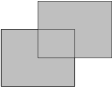
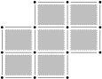

Before discussing the measure problem, let’s talk intuitively about what we mean by “measure.” In this area of
mathematics, measure is a number assigned to a set which represents its size. Of course the term “size” also has
many meanings. Our concept of measure can accommodate many different types of sizes, such as: length, area,
volume, mass, and even probability. On the other hand, some other types of size are not usually associated with
the mathematical concept of measure, such as: cardinality, diameter, and density.
The mathematical concept of a measure is thus beginning to seem geometric. But considering our models of sets
and spaces, in which coordinate axes are indexed by the infinitesimal points of the real number line, measure
really turns out to be an analytic concept. (In particular, this means lots of \epsilon ’s will show up in our studies!)
For a simple set, it may be easy to decide what its measure should be. For example, if we use the term measure
to mean length, then the measure of the interval [4,7] should be 3. But for a more complicated set, the decision may not
be so easy. If you have seen the construction of the Cantor set, think about how you would measure the length of
that!
Thus we arrive at the “measure problem,” which asks whether it is even possible to find a function which
adequately measures subsets of the real line {\mathbb{R}}. Of course it is necessary to say what is
considered adequate. The classical version of the measure problem proposed the three properties below. Formally,
the measure problem asks: Does there exist a measure function m which assigns to each subset A\subset {\mathbb{R}} a value m(A)\in [0,\infty ] satisfying:
(a)
(normality) m(I)= the length of I for every interval I;
(b)
(translation-invariance) m(x+A)=m(A) for
every A; and
(c)
(countable additivity) m(\bigcup _{n=1}^{\infty } A_n)=\sum
m(A_n) for every seqence of pairwise disjoint sets A_n.
Perhaps surprisingly, no such measure function m
exists! While properties (a)–(c) seem very natural, the three items unfortunately turn out to be mutually
inconsistent.
1.1. Theorem (Vitali).
There exists a set A\subset
{\mathbb{R}} such that no measure can be assigned to A consistently with (a)–(c).
Proof.
Rather than work on {\mathbb{R}}, we will work
on the half-open unit interval [0,1) with the
addition operation taken modulo 1. This is ok,
since if there is a measure m on all subsets of
{\mathbb{R}}, then by properties (b)
and (c), m restricts to a measure on subsets
of [0,1) which satisfies property (b) with
respect to addition modulo 1.
Now let {\mathbb{Q}}_1 denote the rationals of
[0,1), that is, {\mathbb{Q}}_1={\mathbb{Q}}\cap [0,1), and consider
the collection of additive cosets of {\mathbb{Q}}_1 inside [0,1). The cosets are of the form a+{\mathbb{Q}}_1 where again addition is interpreted
modulo 1. We now let A\subset [0,1) denote a system of coset
representatives for this collection.
Now every number in [0,1) can be written
uniquely as a+q for a\in A and q\in {\mathbb{Q}}_1. This means that the collection
of translates of A by elements q\in {\mathbb{Q}}_1 covers all of [0,1). In particular, by (a) the measure of \bigcup _{q\in {\mathbb{Q}}_1}(A+q) is exactly 1.
By the previous paragraph, the left-hand side of the above equation is 1. On the other hand the right-hand side is an
infinite sum of some nonnegative constant, and hence must be either 0 or \infty . This is a contradiction!
We remark that it is possible to modify the argument to apply directly to a measure on {\mathbb{R}} rather than going via the unit interval
with addition modulo 1. See Tao for this version.
The lesson is that we must weaken our demands on a measure m. Dropping condition (a) can lead to trivial measures.
Dropping condition (b) takes away the geometric aspects of the measure, and leads to interesting set-theoretic
questions and constructions. Weakening condition (c) to finite additivity leads to interesting solutions, but
only in dimensions \leq 2. (In dimensions \geq 3 the Banach–Tarski paradox again gives a
contradiction.)
Yet the simplest path forward (and the one that we take) is to drop the tacit condition that every set
be measurable. The set A constructed in Vitali’s
proof is very artificial and isn’t likely to occur in any of the most common analytical applications (see the
notes below). We want to be excused from the burden of deciding the measure of the set A. This means we need to figure out what sets we will
measure, and what sets we will not measure. In the end, our measure function m will have a domain which is a proper subset of \mathcal{P}({\mathbb{R}}), but which still contains a
rich collection of sets. And the measure will satisy properties (a)–(c) as long as they are applied to the sets
in the domain of m.
Of course we are also interested in the measure problem for subsets {\mathbb{R}}^n. It can be formulated in just the same
way, with condition (a) replaced by the condition that the measure of a box is equal to its volume. And a
Vitali-type result can also easily be established for this version of the measure problem.
In the next section, we will begin this process by taking a step backwards and build measures with much smaller
domains, and satisfying just fragments of (a)–(c).
Notes and further reading.
The proof of Vitali’s theorem requires the Axiom of Choice. Specifically, it
is needed to find a system of coset representatives for an uncountable collection. Solovay showed that the use
of AC is essential, and that it is consistent with \neg
AC that there is a measure function m on all subsets of {\mathbb{R}}.
Exercise 1.1.
Show that the properties (a)–(c) of a measure imply finite addivitity: If
A and B are disjoint then m(A\cup B)=m(A)+m(B).
Exercise 1.2.
Show that the properties (a)–(c) of a measure imply the inclusion–exclusion
principle: For any sets A,B we have m(A\cup B)+m(A\cap B)=m(A)+m(B).
Exercise 1.3.
Complete the details of the proof that if there is a measure on {\mathbb{R}} satisfying properties (a)–(c), then
there is a measure on [0,1) (with additional
modulo 1) satisfying properties (a)–(c).
Exercise 1.4.
If A is a
bounded set of real numbers, the supremum \sup
(A) is the least upper bound of A, and the infemum \inf (A) is the greatest lower bound of A. Show that s=\sup (A) if and only if:
\circ
for all a\in A we have a\leq s, and;
\circ
for all \epsilon >0, there exists a\in A such that s-a<\epsilon .
Formulate and prove the analogous statement for the infemum.
2. Elementary measure
Reading.
Tao, §1.1.1
In the introduction we saw that we cannot hope to define a measure which will work adequately on all subsets of
{\mathbb{R}}^n. In this section we start over and
define a measure which is capable of measuring only the simplest sorts of subsets of {\mathbb{R}}^n. In doing so we will see some of the
difficulties which one encounters in defining even very simple measures, and we will also see some of these
difficulties resolved. Moreover we will have explicit use for the elementary measure defined in this section, so
doing so is not a digression at all.
Recall that a bounded interval is any subset of {\mathbb{R}} of the form (a,b), [a,b), (a,b], or [a,b]. We shall use the term box for any
subset of {\mathbb{R}}^n which is a Cartesian
product of bounded intervals.
2.1. Definition.
A subset E\subset
{\mathbb{R}}^n is elementary if it can be expressed as a union of finitely many
boxes.
For any elementary set E, we wish to define its
elementary measure, or simply measure, m(E). The measure of any interval will be defined to be
its length, and the measure of any box will be defined to be its volume. Thus if I=(a,b) or [a,b) or (a,b] or [a,b], then we let m(I)=\operatorname {len}(I)=b-a (in all four cases).
And if B=\prod I_n is a box, then we define m(B)=\operatorname {vol}(B)=\prod \operatorname
{len}(I_n). Since we allow only bounded boxes, this product can never be indeterminate
(0\cdot \infty ). So far, so good.
We now wish to define the measure of an elementary set to be the sum of the finitely many boxes it is composed
of. However there are two issues with this statement: first the constituent boxes need not be disjoint, and
second there is in general more than one way to express an elementary set as a union of boxes. The following two
lemmas address these two issues.
2.2. Lemma.
Any elementary set E can be expressed as a finite union of disjoint
boxes.
Proof.
First assume that E\subset {\mathbb{R}}^1 and
that E=\bigcup I_i. Then by considering all
endpoints of the I_i in increasing order a_1,\ldots ,a_m it is easy to write E as the union of sets of the form (a_i,a_{i+1}) together with sets of the form [a_i,a_i] (single points). Such a union is clearly
disjoint.
In general if E\subset {\mathbb{R}}^n and E=\bigcup B_i then for each dimension d\leq n consider in turn the dth sides of the boxes I_i^d. Again consider the endpoints of these
intervals in increasing order a_i^d,\ldots
,a_{m_d}^d. Then we can write E as a union of small boxes which are products of
sets of the form (a_i^d,a_{i+1}^d) or of the form
[a_i^d,a_{i+1}^d]. Such boxes are again disjoint.
Figure 2.f1 shows an example of the method of the proof
above.
Figure 2.f1.
On the left: An elementary set which is a union of two closed boxes. On the right: the same elementary set
expressed as a disjoint union of seven open boxes, 20 open segments, and 14 points.
 
2.3. Lemma.
Suppose the elementary set E can be expressed in two ways a a finite union of
disjoint boxes: E=\bigsqcup B_i=\bigsqcup C_j.
Then \sum \operatorname {vol}(B_i)=\sum \operatorname
{vol}(C_j).
Proof.
We first note that I is an interval with
endpoints a,b, and if a=a_1,a_2,\ldots ,a_m=b is an increasing sequence
then \operatorname {len}(I)=\sum \operatorname
{len}(a_i,a_{i+1}). This is simply because the latter summation telescopes.
Next if B is a box whose dth side has endpoints a^d,b^d, and if a^d=a_1^d,a_2^d,\ldots ,a_{m_d}^d=b^d then \operatorname {vol}(B)= the sum of all small boxes of
the form \prod (a_{i_d}^d,a_{i_d+1}^d). We will
call the set of such small boxes a perfect grid. Intuitively, if you break a box into a perfect grid of
sub-boxes, then the volume of the box is the sum of the volumes of the sub-boxes.
Now if B is a box and one expresses it as a
disjoint union of sub-boxes B=\bigsqcup B_i, then
\operatorname {vol}(B)=\sum \operatorname
{vol}(B_i). This is because it is possible to find a refinement of the given
disjoint union which is a perfect grid as in the previous paragraph. That is, it is possible to write B=\bigsqcup D_i where \{D_i\} is a perfect grid, and each B_i is the union of a perfect grid of sets taken from
the collection \{D_i\}. Then one can simply apply
the argument of the previous paragraph to B and
to each B_i.
Finally given E, B_i, and C_j as in the problem statement, one can find a third
expression E=\bigsqcup D_k where \{D_k\} is a refinement of both\{B_i\} and of \{C_j\}. That is, each B_i and each C_j is a disjoint union of elements of \{E_k\}. It follows from the previous paragraph that
\sum \operatorname {vol}(B_i)=\sum \operatorname
{vol}(D_k) and analogously that \sum
\operatorname {vol}(C_j)=\sum \operatorname {vol}(D_k). This completes the proof.
The two lemmas together imply that it is well-defined to characterize the elementary measure with the
expression m(\bigsqcup B_i)=\sum m(B_i).
2.4. Proposition.
The elementary measure function m satisfies
(a)
(normality) m(B)=\operatorname {vol}(B)
for any box B;
(b)
(translation-invariance) m(x+E)=m(E) for
any elementary set E; and
(c)
(finite additivity) m(E\cup F)=m(E)+m(F)
for any disjoint elementary sets E,F.
Normality is clear from the defenition of m. The
translation-invarinace is easy because it is true of length and volume, and moreover is preserved even when we
take disjoint unions. The finite additivity property is again clear from the definition of m. We remark that m satisfies countable additivity as well (restricted to
elementary sets of course), but that is much more difficult and will be addressed in the future.
The above three core properties imply further useful properties as well.
2.5. Proposition.
The elementary measure function m satisfies
\circ
(monotonicity) m(E)\leq m(F) for
elementary sets E\subset F; and
\circ
(finite subadditivity) m(E\cup F)\leq
m(E)+m(F) for elementary E,F.
These results give an essentially complete solution to the measure problem for elementary sets. It wasn’t too
difficult to achieve, but perhaps not as easy as one would have thought! Even so, what about measuring other
simple sets such as circles, triangles, blobs, Cantor sets, and so on? In the next section we will continue on
the road to doing this.
Exercise 2.1 (Tao Ex 1.1.1).
Show that the class of elementary sets is closed under the operations:
union, intersection, set difference, symmetric difference, and translation.
Exercise 2.2.
Prove Proposition 2.5:
The elementary measure satisfies the monotonicity and finite subadditivity properties.
Exercise 2.3 (Tao Ex 1.1.4).
Show that if E
is an elementary subset of {\mathbb{R}}^m and
F is an elementary subset of {\mathbb{R}}^n then E\times F is an elementary subset of {\mathbb{R}}^{m+n}. Furthermore show that m_e(E\times F)=m_e(E)m_e(F).
3. Jordan measure
Reading.
Tao, §1.1.2.
In the previous section we showed that the intuitive definition of area is sensible for elementary sets, but
then remarked that simple shapes like polygons and circles are not elementary. It is easy to imagine extending
the elementary measure to triangles by cutting and rotating, and to polygons by gluing together triangles.
However no such operation can perfectly measure a circle.
Instead we will measure the circle the way it has always been done, by using approximation. It is not
hard to visualize a circle being approximated by elementary sets, using smaller and smaller boxes near the
boundary. The approximation technique will help us measure most traditional geometric figures, and even many
blobby thingies.
3.1. Definition.
Let A be a
bounded subset of {\mathbb{R}}^n. First define
the inner and outer Jordan measures (sometimes called lower and upper):
If m_{*j}(A)=m^{*j}(A) we say that A is Jordan measurable, we call the common
quantity the Jordan measuref of A, and
we denote it by m(A).
It is immediate from the definition that Jordan measure extends elementary measure in the sense that they agree
on the elementary sets. This means we are justified in using “m” both for the elementary and Jordan measures.
Moreover, we will show that the Jordan measure inherits many of the properties of the elementary measure:
normality, translation-invariance, finite additivity, monotonicity, and finite subadditivity.
The normality and translation-invariance properties hold simply because they hold for elementary measure, and
these properties pass to the supremum. The additivity and subadditivity properties will take a little more work.
For instance, in order to even state the finite additivity property, we first need to establish Boolean closure:
the union of measurable sets is measurable.
Before we begin these results, it will be useful to establish the following characterization of Jordan
measurability. As we will be working with approximations, the following results also illustrate our first use of
\epsilon -style analytical arguments.
3.2. Lemma.
The set A is
Jordan measurable if and only if either of the following holds:
\circ
For all \epsilon >0 there are
elementary sets E,F such that E\subset A\subset F such that m(F\smallsetminus E)<\epsilon .
\circ
For all \epsilon >0 there is an
elementary set E such that m^{*j}(E\bigtriangleup A)<\epsilon .
Proof.
We establish only the equivalence of Jordan measurability with the first item. To begin, assume that A is Jordan measurable and let \epsilon >0 be given. By the m_{*j} definition of Jordan measure, we can find an
elementary set E\subset A such that m(A)-m(E)<\epsilon /2. By the m^{*j} definition of jordan measure we can find an
elementary set F such that A\subset F and m(F)-m(A)<\epsilon /2. It follows that
For the converse, assume that the first bullet holds true, and let \epsilon >0 be arbitrary. Then we can find
elementary sets E,F such that E\subset A\subset F and m(F)-m(E)<\epsilon . From the definitions of inner
and outer Jordan measure, we have that m(E)\leq m_{*j}(A)\leq
m^{*j}(A)\leq m(F). It follows that m^{*j}(A)-m_{*j}(A)<\epsilon . Since \epsilon was arbitrary, we may conclude that m_{*j}(A)=m^{*j}(A) and therefore that A is Jordan measurable.
Note that in the proof, one has to be careful when making a claim such as m(F\smallsetminus E)=m(F)-m(E). It is true in the above
cases because: the elementary sets are closed under set differences, and so all three sets are elementary, and
thus we may apply the finite additivity property for elementary measure.
3.3. Proposition.
If A,B are
Jordan measurable, then so are A\cup B, A\cap B, and A\smallsetminus B.
Proof.
We prove only the case of A\cup B. Suppose that
A,B are Jordan measurable. By the previous lemma,
we can find elementary sets E,F,E',F' such that
E\subset A\subset F, and E'\subset B\subset F', and m(F\smallsetminus E),m(F'\smallsetminus E')<\epsilon
/2. Then we have E\cup E'\subset A\cup
B\subset F\cup F' and using some algebra together with the finite subadditivity of
elementary measure, m(F\cup F'\smallsetminus (E\cup E'))\leq
m(F\smallsetminus E)+m(F'\smallsetminus E')<\epsilon . Again by the previous lemma,
this shows that A\cup B is Jordan measurable.
We are now ready to establish the remaining stated properties of Jordan measure. The following result states
finite additivity, and the first paragraph of its proof gives finite subadditivity. The monotonicity property
follows immediately from finite additivity.
3.4. Theorem.
The Jordan measure satisfies finite additivity, that is, if A,B are Jordan measurable and disjoint, then m(A\cup B)=m(A)+m(B).
Proof.
We first show subbaditivity, that is, that m(A\cup B)\leq
m(A)+m(B). Let \epsilon
>0 be given. Using the fact that m=m^{*j} we can find elementary sets F,F' such that A\subset F, B\subset F', m(F)-m(A)<\epsilon /2, and m(F')-m(A')<\epsilon /2. Using the monotonicity
and subadditivity properties of the elementary measure, together with the definition of Jordan measurability,
we now have:
Since \epsilon was arbitrary, we achieve the
desired inequality.
Now additionally assume that A,B are disjoint,
and again let \epsilon >0. This time using
m=m_{*j}, we can find elementary sets E,E' such that E\subset A, E'\subset B, m(A)-m(E)<\epsilon /2, and m(B)-m(E')<\epsilon /2. Using the fact that E,E' are disjoint, the finite additivity of
elementary measure, and the definition of Jordan measurability, we now have:
Again letting \epsilon tend to 0, we achieve that m(A\cup B)\geq m(A)+m(B).
While you probably have a clear idea of what the elementary sets look like, it is now time to give some
examples and non-examples of Jordan measurable sets. Some simple but useful new examples are the axis-parallel
triangles. Suppose T is an axis-parallel triange
with leg lenghs a and b. To prove that T is Jordan measurable, note that two copies of T essentially make up a box with area ab. Using the finite additivity, this implies that the
measure of T is the expected ab/2.
To make this argument we need to know that Jordan measure is invariant under 180^\circ rotation, which is clear because it is true
for boxes. Moreover since the two copies of T
overlap in a line segment, we also need to know that the Jordan measure of a line segment is 0. This fact follows from the more general result
below.
3.5. Lemma.
Let f be a
continuous function defined on a closed, bounded interval. Then the graph of f, considered as a subset of {\mathbb{R}}^2, has Jordan measure 0.
Proof.
Let I denote the domain of f. Recall that since I is closed and bounded, it is compact.
Recall also that a continuous function with a compact domain is uniformly continuous: for any \epsilon >0 there exists a \delta >0 such that for any interval J, \operatorname {len}(J)<\delta implies \operatorname {len}(f(J))<\epsilon .
So let \epsilon >0 be given, and choose \delta >0 as above. Shrinking \delta if necessary, we can suppose that \operatorname {len}(I)/\delta is an integer k. Partitioning I into intervals J_1,\ldots ,J_k each of lengh \delta , we have that the graph of f is contained in the set
Note that the min and max values in the definition of A exist by the extreme value theorem. Now A is a union of k many rectangles each of size at most \delta \epsilon . Thus A is elementary and its measure is at most k\delta \epsilon . This latter value is \operatorname {len}(I)\epsilon , so the upper measure
m^{*j} of the graph of f is at most \operatorname {len}(I)\epsilon . Taking \epsilon \to 0, we conclude that f is Jordan measurable with measure 0.
It is now not difficult to conclude that all polygons are Jordan measurable and have the expected measure. This
is because all polygons can be decomposed into a union of axis parallel triangles (possibly overlapping on their
measure zero edges).
A simple example of a set which is not Jordan measurable is the set {\mathbb{Q}}_1={\mathbb{Q}}\cap [0,1] of rational
numbers in the unit interval. Indeed the only elementary sets E\subset {\mathbb{Q}}_1 are the finite sets, and so
m_{*j}({\mathbb{Q}}_1)=0. And the only elementary
sets F such that {\mathbb{Q}}_1\subset F are of the form [0,1]\smallsetminus X where X is finite, and so m^{*j}({\mathbb{Q}}_1)=1.
Intuitively, the Jordan measure works very well for classical geometric figures, but not very well for
relatively simple analytic objects such as countable dense sets, the Cantor set, and so forth. To handle such
sets, we will soon work to describe the Lebesgue measure, which satisfies countable additivity. Before
going to such generality, however, we explore the connection between Jordan measure and Riemann integration.
Exercise 3.1 (Tao, Ex
1.1.6(4)(6)).
Verify that Jordan measure agrees with the elementary measure on elementary
sets (thus satisfies the normality property). Verify that Jordan measure satisfies the translation-invariance
property.
Exercise 3.2 (See Tao, Ex
1.1.5).
Complete the proof of Lemma 3.2: A is Jordan measurable
iff for all \epsilon >0 there is an elementary
set E such that m^{*j}(E\bigtriangleup A)<\epsilon .
Exercise 3.3 (Tao, Ex 1.1.6(1)).
Complete the proof of Proposition 3.3: If A,B are Jordan
measurable, then so are A\cap B and A\smallsetminus B.
Exercise 3.4 (Tao, Ex 1.1.12).
Say that A is
Jordan null if A is Jordan measurable
and m(A)=0. Show that any subset of a Jordan null
set is a Jordan null set.
Exercise 3.5.
Show that the outer Jordan measure m^{*j}(A) is equal to:
\begin{equation*} \inf \left\{\,\operatorname {vol}(B_1)+\cdots
+\operatorname {vol}(B_k)\mid B_1,\ldots ,B_k\text{ are boxes and }A\subset B_1\cup \cdots \cup
B_k\,\right\} \end{equation*}Exercise 3.6 (Tao, Ex 1.1.19).
Let A be an
arbitrary bounded set, and let E be an
elementary set. Show that
Show that A is
Jordan measurable if and only if for all \epsilon
>0 there exists an elementary set E such that A\subset E and m^{*j}(E\smallsetminus E)<\epsilon .
4. Riemann integration
Reading.
Tao, §1.1.3.
If the picture of Lemma 3.5 reminded you of Riemann sums,
it should. Measure theory is closely connected to integration theory, as both are concerned with calculating
areas of some regions. Moreover the Jordan measure corresponds neatly with the Riemann integral. The following
presentation of the Riemann integral is actually attributed to Darboux.
Just as we defined the elementary measure before we defined the Jordan measure, we will now define the
“piecewise constant” integral before we define the Riemann integral.
4.1. Definition.
Let f be a
real-valued function defined on [a,b]. Then f is said to be piecewise constant if there
exists a partition \mathcal{P} of [a,b] into finitely many subintervals I_j such that f takes a constant value c_j on each interval I_j.
In other words, f is piecewise constant if f is of the form \sum _1^k c_j\chi _{I_j}, where I_j are intervals. Here \chi _{I_j} denotes the characteristic
function of I_j, that is, \chi _{I_j}(x)=1 if x\in I_j and \chi _{I_j}(x)=0 otherwise.
4.2. Definition.
If f=\sum _1^kc_j\chi
_{I_j} then the pc integral of f is defined to be \sum _1^kc_j\operatorname {len}(I_j).
As was the case with the elementary measure, one must check that the value of the pc integral is well-defined.
That is, if f is expressed in two different ways as
a pc function, say \sum c_j\chi _{I_j}=\sum d_k\chi
_{J_k}, then one must check that the two values \sum c_j\operatorname {len}(I_j) and \sum d_k\operatorname {len}(J_k) agree.
4.3. Definition.
Let f be a
bounded function on [a,b]. First define the lower
and upper Riemann forms:
Then if \underline{\int }f=\overline{\int }f we
say that f is Riemann integrable, and
denote the common value simply by \int f.
4.4. Proposition.
The Riemann integral satisfies the three properties:
\circ
(normality) If A is a Jordan measurable
subset of [a,b], then \chi _A is Riemann integrable over [a,b] and \int \chi _A=m(A).
\circ
(linearity) If f,g are Riemann integrable
then so are cf and f+g and we have \int cf=c\int f, and \int (f+g)=\int f+\int g.
\circ
(monotonicity) If f,g are Riemann
integrable and f\leq g then \int f\leq \int g.
Proof.
We establish only the normality property. By Lemma 3.2,
for any \epsilon we can find disjoint intervals
I_j and disjoint intervals J_k such that \bigcup I_j\subset A\subset \bigcup J_k and m(\bigcup J_k\smallsetminus \bigcup I_j)<\epsilon
. It is easy to see from the definition of the pc integral that \text{pc}\int \chi _{\bigcup I_j}=m(\bigcup I_i), and
similarly \text{pc}\int \chi _{\bigcup J_k}=m(\bigcup
J_k). We now have
Since the left and right-hand sides differ by <\epsilon
, it follows that the lower and upper integrals differ by <\epsilon as well. Since \epsilon was arbitrary, it follows that \chi _A is integrable. And since we also have
we may conclude that \int \chi _A is equal to
m(A).
If one re-examines the definition and properties of the Jordan measure, it should be clear that there is a
close parallel between the Riemann integral and Jordan measure. The normality property above begins to make this
connection formal. The next result further strenghens the two-way connection between the two notions.
4.5. Theorem.
If f is a
nonnegative, bounded function on [a,b], then
f is Riemann integrable if and only if the region
A=\left\{\,(x,y)\mid 0\leq y\leq f(x)\,\right\}
is Jordan measurable. Moreover, in this case we have \int
f=m(A).
Proof.
First suppose that f is Riemann integrable and
let \epsilon >0 be given. Choose pc functions
g,h such that g\leq f\leq h and \text{pc}\int (h-g)<\epsilon . Let E be the region under the graph of g and let F be the region under the graph of h. It is clear that E,F are elementary, E\subset A\subset F, and m(F\smallsetminus E)<\epsilon .
Conversely if A is Jordan measurable we can find
an elementary E such that E\subset A and m(A\smallsetminus E)<\epsilon . Using our usual
grid argument, we can suppose that there is a sequence of disjoint intervals I_j such that E is a union of boxes with horizontal sides selected
from the I_j. Pairing each I_j with the constant c_j= the maximum of the vertical coordinates of all
of the boxes with horizontal side I_j, we obtain
a pc function g. It is easy to see that m(E)\leq \text{pc}\int g\leq m(A). This shows that
the lower Riemann integral of f is m(A). We can proceed similarly using an outer
approximation B to show that the upper Riemann
integral of f is m(A) too.
Depending on when you last studied Riemann integration, you may better recall Riemann’s classical approach
rather than the Darboux approach above. This version involves a quite expansive notation:
\circ
f denotes a real-valued, bounded function
defined on the interval [a,b].
\circ
x_0,x_1,\ldots ,x_k denotes an increasing
sequence of points in [a,b] (they will be
rectangle endpoints), where x_0=a and x_k=b.
\circ
\mathcal{P} denotes the partition of [a,b] into subintervals defined by the x_i, that is, into subintervals [x_{i-1},x_i].
\circ
\delta x_i denotes the length of the ith interval, x_i-x_{i-1}.
\circ
\|\mathcal{P}\| denotes the norm of the
partition, \max \delta x_i.
\circ
x_1^*,\ldots ,x_k^* denotes any selection of
points such that x_i^*\in [x_{i-1},x_i].
With these pieces in hand, we can define the Riemann sums and the Riemann integral.
4.6. Definition.
With f, \mathcal{P}, \delta x_i, x_i^* as above, the corresponding Riemann
sum is:
provided this limit exists. Here the limit “exists” and equals L if for all \epsilon >0 there exists \delta >0 such that for all \mathcal{P} and x_i^* we have \|\mathcal{P}\|<\delta implies |R(f,\mathcal{P},x_i^*)-L|<\epsilon .
It is an exercise in both notation and partition management to check that f is Riemann integrable in the Darboux sense described
earlier in this section if and only if f is Riemann
integrable in the classical Riemann sense just defined.
Exercise 4.1 (See Tao, Ex
1.1.21).
Show that the pc integral is well-defined, and satisfies the normality,
linearity, and monotonicity properties.
Exercise 4.2 (Tao, Ex 1.1.22).
Let f be a
bounded function on the interval [a,b]. Then
f is integrable in the Darboux sense if and only
if f is integrable in the classical Riemann
sense, and in this case the two values agree.
Exercise 4.3 (Tao, Ex 1.1.23).
Let f\colon [a,b]\to
{\mathbb{R}}. Show that if f is continuous, then f is Riemann integrable. Show that if f is bounded and piecewise continuous, then f is Riemann integrable.
Exercise 4.4 (Tao, Ex 1.1.24).
Complete the proof of Proposition 4.4: Show that the Riemann integral satisfies the linearity and monotonicity properties.
(Hint: first establish these properties for the pc integral.)
5. Introduction to Lebesgue measure
Reading.
Tao, §1.2, first few pages
The Jordan measure that we have constructed works very well for the sets that it measures. And the Riemann
integral works very well for the functions that it integrates. But there are several shortcomings that we have
discussed, and several more too.
\circ
Unbounded sets are not Jordan measurable, and unbounded functions are not Riemann integrable
\circ
There are examples of bounded sets which are open or closed, but still not Jordan measurable
\circ
A countable union of Jordan measurable sets need not be Jordan measurable
\circ
A pointwise limit of Riemann integrable functions need not be Riemann integrable, even if it is again
bounded
In this section we will strenghten the definiton of Jordan measure to obtain the Lebesgue measure. The Lebesgue
measure possesses stronger properties than the Jordan measure, including the ability to measure a wider class of
sets. The price for this is that it will be harder to establish these properties.
To begin, recall from an exercise in the Jordan measure section that we can rewrite the definition of outer
Jordan measure as follows.
\begin{equation*} m^{*j}(A)=\inf \left\{\,\left.\sum _1^k \operatorname
{vol}(B_i)\;\right|\;\text{$B_i$ are boxes and }A\subset \bigcup _1^kB_i\,\right\} \end{equation*}
The idea of the Lebesgue measure is simply to replace the finite union and summation with a countable union and
summation.
5.1. Definition.
Let A be any
subset of {\mathbb{R}}^n. The Lebesgue outer
measure of A is
\begin{equation*} m^*(A)=\inf \left\{\,\left.\sum _1^\infty
\operatorname {vol}(B_i)\;\right|\;\text{$B_i$ are boxes and }A\subset \bigcup _1^\infty B_i\,\right\}
\end{equation*}
Notice that we have dropped the assumption that A
is bounded. There are many examples of unbounded sets with Lebesgue outer measure zero. In fact, every countable
set has lebesgue outer measure zero.
We also remark that we will not define an “inner” version of Lebesgue measure analogous to the Jordan inner
measure. The reason is that we do not wish to assume that positive measure sets will contain any positive volume
boxes. For example, the set [0,1]\smallsetminus
{\mathbb{Q}} should have a measure of 1 but has lower Jordan measure 0. In fact, even if we replace the finite summation
from Jordan inner measure with a countable summation, the resulting inner measure would still be 0!
Without an inner measure, we cannot define Lebesgue measurability simply by requiring the outer and inner
measures to agree. In order to find another way to define Lebesgue measurability, we recall from an earlier
exercise that A is Jordan measurable if and only if
for all \epsilon >0 there exists an elementary
set E such that A\subset E and m^{*j}(E\smallsetminus A)<\epsilon . This leads to
the following definition.
5.2. Definition.
Let A be any
subset of {\mathbb{R}}^n. We say that A is Lebesgue measurable if for every \epsilon >0 there exists a sequence of boxes B_i such that A\subset \bigcup B_i and m^*(\bigcup B_i\smallsetminus A)<\epsilon . When
this is the case, we define m(A)=m^*(A) to be the
Lebesgue measure of A.
Most sources actually define A to be Lebesgue
measurable if for every \epsilon >0 there exists
an open setO such that A\subset O and m^*(O\smallsetminus A)<\epsilon . While this
definition using open sets is more elegant, our official definition using unions of boxes agrees more closely
with our definition of Lebesgue outer measure. Our work of the next few sections will reveal how to show that
these two definitions are equivalent.
We will see in the rest of this section and the next that the Lebesgue measure agrees with the Jordan measure
on the Jordan measurable sets, and moreover is capable of measuring significantly more sets. In fact the
Lebesgue measurable sets encompass almost everything seen in real analysis and its applications, with exceptions
essentially boiling down to certain Axiom of Choice constructions. The Lebesgue measure also satisfies all the
measure axioms that we have mentioned so far, including their countable versions.
Likewise, later on we will introduce the corresponding Lebesgue integral. This integral agrees with the Riemann
integral, and is capable of integrating significantly more functions. It also has significantly stronger
properties than the Riemann integral, including a countable version of linearity.
Before we begin working to establish all these claims, we study the Lebesgue outer measure further. In order to
proceed, it is useful to lay out what properties are expected of an outer measure. The following will be
referred to as the outer measure axioms.
(a)
(empty set) m^*(\emptyset )=0
(b)
(monotonicity) If A\subset B then m^*(A)\leq m^*(B)
Since the outer measure applies to all sets, and we have seen there exist non-measurable sets, we do not expect
outer measure to satisfy countable additivity in general. Still axiom (c) is quite strong: the Jordan outer
measure does not satisfy countable subadditivity.
5.3. Proposition.
The Lebesgue outer measure satisfies the outer measure axioms (a)–(c).
Proof.
The axioms (a) and (b) are both trivial, so it remains to prove only axiom (c). Let E_n be arbitrary sets and let \epsilon >0 be given. From the definition of
Lebegue outer measure, for each n we can find a
sequence of boxes B_i^n such that A_n\subset \bigcup _iB_i^n and \sum _im(B_i^n)-m^*(A_n)<\epsilon /2^n.
Taking unions, we have \bigcup A_n\subset \bigcup _n\bigcup
_iB_i^n, and moreover:
Taking \epsilon \to 0, we obtain the desired
inequality m^*(\bigcup A_n)\leq \sum m^*(A_n).
The bookkeeping used in the above proof is called an “\epsilon
/2^n argument”, and is used frequently in countable approximations.
In the next sections we will work to address under what circumstances the Lebesgue outer measure satisfies
additivity or otherwise behaves well.
Exercise 5.1 (Tao, Ex 1.2.1).
Show that the countable union of Jordan measurable sets need not be Jordan
measurable, even when bounded. Show that the countable intersection of Jordan measurable sets need not be
Jordan measurable.
Exercise 5.2 (Tao, Ex 1.2.2).
Give an example of a sequence of uniformly bounded, Riemann integrable
functions on [0,1] which converges pointwise to a
function that is not Riemann integrable. Is it possible to give an example which converges uniformly?
Exercise 5.3.
Show that m^*(A)\leq
m^{*j}(A). Give an example of a set A such that m^*(A)<m^{*j}(A).
Exercise 5.4.
Show that Jordan outer measure does not satisfy countable subadditivity.
Exercise 5.5.
Show that if A
is Lebesgue null, that is, m^*(A)=0, then A is Lebesgue measurable.
6. Lebesgue outer measure
Reading.
Tao, §1.2.1.
We have shown that the Lebesgue outer measure satisfies countable subadditivity. We are really interested in
additivity, but we know that even the finite additivity axiom cannot hold for all sets. In the end, we will
prove that countable additivity is true for measurable sets. For the moment, we will be satisfied with the
following version of additivity which holds in special cases.
6.1. Lemma.
Suppose that A,B are positively separated, that is, that d(A,B)=\inf \left\{\,d(x,y)\mid x\in A, y\in
B\,\right\}>0. Then m^*(A\cup
B)=m^*(A)+m^*(B).
Proof.
Subbaditivity implies that m^*(A\cup B)\leq
m^*(A)+m^*(B), so it remains only to show m^*(A\cup B)\geq m^*(A)+m^*(B). Applying the
definition of m^*(A\cup B), given any \epsilon >0 we can find boxes C_i such that A\cup B\subset \bigcup C_i and \sum \operatorname {vol}(C_i)-m^*(A\cup B)<\epsilon
.
Let us first consider an easy case when each C_i
meets at most one of the sets A,B. Then we can
rewrite the sequence \{C_i\} as \{D_i\}\cup \{E_i\}, where the D_i’s meet only A and the E_i’s meet only B. Now
In the general case, we can reduce to the easy one by partitioning each B_i into smaller boxes, each with diameter smaller
than d(A,B). Once this is done, each new box
meets at most one of A,B and we may proceed as
above.
Up to this point, we have not yet shown that m^*
ever takes a nonzero value! In fact m^* satisfies a
strong normality axiom, which states that the outer measure of an elementary set is equal to its elementary
measure. When we proved this property for Jordan measure, we started by showing that one cannot partition an
interval into finitely many subintervals whose lengths somehow add up to less than the original. For countable
partitions this is intuitively still true, but much harder to show!
6.2. Theorem.
If E is an
elementary subset of {\mathbb{R}}^n, then m^*(E) agrees with the elementary measure m_e(E).
Proof.
It is clear that m^*(E)\leq m_e(E), since E is itself a union of boxes whose volumes sum to
m(E). Thus it remains only to show m^*(E)\geq m_e(E). Appealing to the definition of
m^*(E), given any \epsilon >0 we can find boxes B_i such that E\subset \bigcup B_i and \sum \operatorname {vol}(B_i)-m^*(E)<\epsilon .
Rearranging, this says m^*(E)>\sum \operatorname
{vol}(B_i)-\epsilon . Now we would like to say that \sum \operatorname {vol}(B_i)\geq m_e(E), but
unfortunately the elementary measure is only finitely subadditive.
In order to proceed, let us temporarily assume that E is closed and the B_i are open. We recall that any closed and bounded
set is compact, and that any covering of a compact set by open sets has a finite subcovering. Thus
under these assumptions, we have that just finitely many of the B_i are needed to cover E. Thus the argument of the previous paragraph works
in this case!
In order to assume that the B_i are open, we can
enlarge each slightly and find an open box B'_i
such that B_i\subset B'_i and \operatorname {vol}(B'_i)-\operatorname {vol}(B_i)<\epsilon
/2^i.
In order to assume that E is closed, first write
it as a finite union of disjoint boxes C_1,\ldots
,C_k. Shrinking each C_i
slightly, we can find a closed box C'_i\subset
C_i such that m_e(C_i\smallsetminus
C'_i)<\epsilon /k. Replacing E with \bigcup C'_i we obtain a closed set as desired.
As a consequence of the theorem, we now know that finite additivity holds for m^* for finite unions of disjoint boxes (after all it
is true for the elementary measure). In fact it also holds for finite unions of almost disjoint boxes: here two
boxes are said to be almost disjoint if they have disjoint interiors. This is because the elementary
measure of the boundary of a box is always zero. The next result extends this from finite to countable unions.
6.3. Theorem.
Suppose B_i is
a sequence of pairwise almost disjoint boxes. Then m^*(\bigcup
B_i)=\sum \operatorname {vol}(B_i).
Proof.
By subadditivity together with the previous theorem, we have m^*(\bigcup B_i)\leq \sum m^*(B_i)=\sum \operatorname
{vol}(B_i). Hence it remains only to show m^*(\bigcup B_i)\geq \sum \operatorname {vol}(B_i).
For this, let N\in {\mathbb{N}} be given, and
note that \bigcup _1^NB_i is an elementary set.
Thus by monotonicity together with the previous theorem, we have
Taking N\to \infty , we obtain the desired
inequality.
We are finally making some progress: for unions of almost disjoint sequences of boxes, the additivity property
holds and the measure of the union is equal to the expected quantity. This leads one to ask what kinds of sets
can be written as unions of almost disjoint sequences of boxes, and the following result shows this at least
includes the open sets.
6.4. Proposition.
Any open set O
can be written as a union of a sequence of pairwise almost disjoint boxes.
Proof.
Consider the family \mathcal{Q} of dyadic
cubes, that is, cubes with each side of the form [m/2^n,(m+1)/2^n] where n\geq 0. The family \mathcal{Q} has a nesting property: for any
two cubes in \mathcal{Q}, either one is contained
in the other or else the two cubes are almost disjoint.
It is not difficult to observe that \mathcal{Q}
is a basis for the topology of {\mathbb{R}}^n. In
particular, for any x\in O there exists a cube
B_x\in \mathcal{Q} such that x\in B_x\subset O. Thu union of all B_x for x\in O is a covering of O by dyadic cubes. Now we eliminate duplicates from
this covering, that is, remove any cube in the covering that is contained in some other cube of the covering.
Since any nested chain of cubes has a maximal element, the cubes which remain will still cover O. And by the nesting property, the cubes which
remain will also be almost disjoint.
The above result gives a very direct method of calculating the Lebesgue outer measure (and hence the Lebesgue
measure) of any open set! We close this section with the following so-called “outer regularity lemma”, which
shows that the Lebesgue outer measure is determined by its values on the open sets. When combined with the
previous result, this gives a kind of general formula for the outer measure.
6.5. Lemma.
Let A be any
subset of {\mathbb{R}}^n. Then m^*(A)=\inf \left\{\,m^*(O)\mid \text{$O$ is open and }A\subset
O\,\right\}.
Proof.
It is clear from monotonicity of m^* that \leq holds. Thus it remains only to show \geq . Applying the definition of m^*(A) we can find boxes B_i such that A\subset \bigcup B_i and \sum \operatorname {vol}(B_i)-m^*(A)<\epsilon .
Arguing as in an earlier proof, we can enlarge the B_i slightly to assume without loss of generality
that they are open. Then
\begin{align*} m^*(A)&\geq \sum \operatorname {vol}(B_i)-\epsilon
\\ &\geq m^*(\bigcup B_i)\\ &\geq \inf \left\{\,m^*(O)\mid \text{$O$ is open and }A\subset
O\,\right\}-\epsilon \end{align*}
Taking \epsilon \to 0, we obtain the desired
result.
In the next section we will use these partial results to conclude that the Lebesgue (outer) measure always
behaves well on the measurable sets.
Exercise 6.1 (Tao, Ex 1.2.5).
Suppose A is
expressible as a countable union of pairwise almost disjoint boxes. Show that m^*(A)=m_{*j}(A).
Exercise 6.2 (Tao, Ex 1.2.6).
Show that it is not true in general that
\begin{equation*} m^*(A)=\sup \left\{\,m^*(O)\mid \text{$O$ is open
and }O\subset A\,\right\} \end{equation*}
7. Lebesgue measurability
Reading.
Tao, §1.2.2.
Recall that a set A is called Lebesgue measurable
if it can be well-approximated from the outside by a countable union of boxes: for all \epsilon >0 there is a sequence of boxes B_i such that A\subset \bigcup B_i and m^*(\bigcup B_i\smallsetminus A)<\epsilon . In
particular, this implies tautologically that countable unions of boxes are Lebesgue measurable. In the next
result we work to establish that many, many other sets are Lebesgue measurable too.
7.1. Theorem.
Open and closed sets are Lebesgue measurable. Complements, countable unions,
and countable intersections of measurable sets are measurable.
Proof.
Since the boxes form a base for the topology of {\mathbb{R}}^n, any open set can be written as a
union of boxes. (Or see Proposition 6.4.) Thus by the
remark above, open sets are Lebesgue measurable.
For countable unions, suppose that A_n are
Lebesgue measurable. Given \epsilon >0, find
for each n a countable union of boxes U_n such that A_n\subset U_n and m^*(U_n\smallsetminus A_n)<\epsilon /2^n. Then we
have
For closed sets, assume first that A is closed
and bounded, and thus compact. Using the outer regularity lemma we can find an open set O such that A\subset O and m^*(O)-m^*(A)<\epsilon . We wish to show that
m^*(O\smallsetminus A)<\epsilon too. Since
O\smallsetminus A is open, we can use
Proposition 6.4 to write O\smallsetminus A as an almost disjoint union of
closed dyadic cubes C_n. Then \bigcup _1^N C_n is compact and thus positively
separated from the compact set A. By
Lemma 6.1, additivity holds for positively separated
sets, so we have:
It follows that \sum _1^N\operatorname {vol}(C_i)=m^*(\bigcup
_1^NC_i)<\epsilon , and taking N\to \infty
we have \sum \operatorname {vol}(C_i)\leq
\epsilon . This shows that m^*(O\smallsetminus A)\leq \epsilon , as desired.
In general a closed set can be written as a countable union of compact sets, and we have already handled the
case of countable unions.
For complements, let A be measurable and for
each n find a union of boxes U_n such that A\subset U_n and m^*(U_n\smallsetminus A)<1/n. We can enlarge the
constituent boxes of each U_n slightly to find an
open set O_n such that U_n\subset O_n and m^*(U_n\smallsetminus O_n)<1/n. (Here we are using
normality and subadditivity to achieve this estimate.) Taking the intersection of the O_n we now have A\subset \cap O_n and m^*(\bigcap O_n\smallsetminus A)=0. Writing these two
expressions in complement, they become \bigcup O_n^c\subset
A^c and m^*(A^c\smallsetminus \bigcup
O_n^c)=0. Now A^c can be
expressed as a union of two sets: \bigcup O_n^c
and A^c\smallsetminus \bigcup O_n^c. The first is
Lebesgue measurable because it is a countable union of closed sets. The second is Lebesgue measurable because
it is null (see an earlier exercise). Appealing again to the closure under unions, we conclude that A^c is measurable too.
For countable intersections, we can simply apply Demorgan’s laws to reduce it to complements and countable
unions. Whew!
The above theorem thus shows that the Lebesgue measurable sets form a \sigma -algebra, that is, a family of sets that
is closed under countable unions, countable intersections, and complements. It moreover shows that the Lebesgue
measurable sets includes the well-known class of Borel sets, that is, the \sigma -algebra generated by the open and closed sets.
The Borel sets are often identified as those which can be explicitly described. Most sets we encounter
in analysis can be explicitly described and are thus Borel and Lebesgue measurable.
We now know that Borel sets are Lebesgue measurable, null sets are Lebesgue measurable, and the measurable sets
form a \sigma -algebra. The next result concludes
that this information characterizes the Lebesgue measurable sets.
7.2. Proposition.
The collection of Lebesgue measurable sets is the least \sigma -algebra containing both the open sets and the
Lebesgue null sets.
Proof.
It is clear that the Lebesgue measurable sets are a \sigma
-algebra containing the open sets and the Lebesgue null sets. On the other hand suppose
that E is a Lebesgue measurable set. By the
previous lemma for all n we can find open sets
O_n such that E\subset O_n and m^*(O_n\smallsetminus E)<1/n. It follows that
N=\bigcap O_n\smallsetminus E is Lebesgue null.
Now have that
and thus E lies in the \sigma -algebra generated by the open sets and the
Lebesgue null sets.
We conclude this section with some useful equivalents of Lebesgue measurability, similar to the ones we
developed for Jordan measurability. The following result implies that the Lebesgue measurable sets can be
characterized as those which are “almost open.”
7.3. Lemma.
A set A is
Lebesgue measurable if and only if for all \epsilon
>0 there exists an open set O such that m^*(O\bigtriangleup A)<\epsilon .
Proof.
Our original definition of Lebesgue measurability automatically gives an open set O such that m^*(O\bigtriangleup A)<\epsilon . Conversely, let
A be any set and suppose the condition holds.
Then for any \epsilon we can find an open set
O_\epsilon such that m^*(O_\epsilon \bigtriangleup E)<\epsilon . Let
U_\epsilon =\bigcup O_{\epsilon /2^k}. Then it is
not difficult to check that m^*(U_\epsilon \smallsetminus A)\leq
\epsilon , and m^*(A\smallsetminus U_\epsilon
)=0. Finally letting B=\bigcap
_nU_{1/n} we have that B is
a measurable set and both m^*(A\smallsetminus
B)=0 and m^*(B\smallsetminus
A)=0. We have thus shown that A differs from a measurable set by a null set, and we
leave it as an exercise to check that this implies A is measurable too.
Perhaps even more surprising, the Lebesgue measurable sets of finite measure can be characterized as those
which are “almost elementary”.
7.4. Lemma.
A set A is
Lebesgue measurable with finite Lebesgue measure if and only if for all \epsilon >0 there exists an elementary set E such that m^*(E\bigtriangleup A)<\epsilon .
Proof.
Suppose that A is Lebesgue measurable and let
\epsilon >0 be given. Let O be an open set such that A\subset O and m^*(O\smallsetminus A)<\epsilon . Then O can be written as a union of almost disjoint boxes
O=\bigcup B_i, and we know that m(O)=\sum \operatorname {vol}(B_i).
Now m(O)<m(A)+\epsilon and the right-hand
side is finite, so the sum \sum \operatorname
{vol}(B_i) converges. Thus there exists some N such that \sum _{N+1}^\infty \operatorname {vol}(B_i)<\epsilon
. Letting E=\bigcup _1^N B_i,
we have that E is elementary and m(O\smallsetminus E)<\epsilon . Thus we have
which is sufficient to prove the implication. The converse implication is similar to the previous lemma.
We have now established many useful properties of the outer measure m^* and shown that it has a broad collection of
measurable sets. In the next section we will confirm as promised that m^* behaves very well when restricted to the collection
of measurable sets.
Exercise 7.1 (See Tao, Ex
1.2.7).
(a)
Show that A is measurable iff for all
\epsilon >0 there exists a closed set
F\subset A such that m^*(A\smallsetminus F)<\epsilon .
(b)
Show that A is measurable iff for all
\epsilon >0 there exists a measurable
set B such that m^*(A\bigtriangleup B)<\epsilon .
Exercise 7.2 (Tao, Ex 1.2.14).
Show that any set A is contained in a Lebesgue measurable set B such that m(B)=m^*(A).
Exercise 7.3 (Tao, Ex 1.2.15).
Show the inner regularity property: If A is Lebesgue measurable, then
In the previous section we established that many sets are Lebesgue measurable. When A is Lebesgue measurable we simply write m(A) for m^*(A), and we call m the Lebesgue measure. We are finally ready
to prove that the Lebesgue measure satisfies the requirements of a measure that we laid out in the first
section, at least when they are applied to Lebesgue measurable sets.
8.1. Theorem.
The Lebesge measure satisfies the axioms
(a)
(normality) if B is a box then m(B)=\operatorname {vol}(B);
(b)
(translation-invariance) m(x+A)=m(A) for
every x\in {\mathbb{R}}^n and measurable
set A;
(c)
(countable additivity) m(\bigcup A_n)=\sum
m(A_n) for every sequence of pairwise disjoint measurable sets A_n.
Proof.
We have already established normality for m^*
and hence for m. Translation-invariance of m^* is clear from the definition since it is clear
for boxes.
For countable additivity, first recall that we always have subadditivity so we need only show m(\bigcup A_n)\geq \sum m(A_n). Suppose first that
the A_n are compact. Then they are pairwise
positively separated, so using Lemma 6.1 inductively we
can establish that m(\bigcup _1^N A_n)=\sum _1^N
m(A_n). It follows that m(\bigcup A_n)\geq
\sum _1^Nm(A_n). Taking N\to \infty
we have m(\bigcup A_n)\geq \sum
m(A_n) as desired.
Next assume that the A_n are bounded but not
necessarily closed. By the measurability of A_n^c
we can find open sets O_n such that A_n^c\subset O_n and m^*(O_n\smallsetminus A_n^c)<\epsilon /2^n. Taking
complements we thus have compact sets K_n\subset
E_n such that m^*(A_n\smallsetminus
K_n)<\epsilon /2^n. Now using the additivity for compact sets,
Taking \epsilon \to 0, we are finished in this
case.
Finally for general A_n, decompose {\mathbb{R}}^d into disjoint bounded cells C_m. Then A_n=\bigcup _m A_n\cap C_m. Now the sets A_n\cap C_n are bounded, so applying the result for
bounded sets twice we have:
We have now established the existence and all of the promised axioms of the Lebesgue measure. Additional useful
properties can be derived from the axioms, such as the following result concerning continuity of the measure
function.
8.2. Theorem.
\circ
(upwards monotone convergence theorem) If A_n are measurable and A_{n+1}\supset A_n then m(\bigcup A_n)=\lim m(A_n).
\circ
(downwards monotone convergence theorem) If A_n are measurable and A_{n+1}\subset A_n then m(\bigcap A_n)=\lim m(A_n), provided some A_n has finite measure.
Proof.
For the upwards MCT, let A'_n=A_n\smallsetminus
A_{n-1} and note that the A'_n are disjoint and have the same union as before:
\bigcup A'_n=\bigcup A_n. Note that we implicitly
set the value A_0=\emptyset . Applying countable
additivity, we now have
The last equality holds simply by telescoping cancellation.
For the downwards MCT, we can suppose without loss of generality that A_1 has finite measure. We thus take complements
inside A_1 to obtain the sequence B_n=A_1\smallsetminus A_n. Then the B_n form an increasing sequence and \bigcup B_n=A_1\smallsetminus \bigcap A_n. Using this
and the upwards MCT, we now have
Cancelling the m(A_1) from the first and last
expression, we obtain that 0=m(\bigcap A_n)-\lim
m(A_n), which implies the desired result.
Exercise 8.1 (Tao Ex
1.2.11(iii)).
Give a counterexample showing that the hypothesis that some A_n has finite measure is necessary for the downwards
MCT.
Exercise 8.2 (Tao Ex 1.2.12).
Suppose you know that the domain of m is a \sigma -algebra, and m satisfies m(\emptyset )=0 and the countable additivity
property. Show that m satisfies the monotonicity
property and the countable subadditivity property.
Exercise 8.3 (Tao Ex 1.2.13).
Let us say that a sequence of sets A_n converges to A if the characteristic functions \chi _{A_n} converge pointwise to \chi _A.
(a)
Show that if A_n are Lebesgue measurable
and A_n converges to A then A is Lebesgue measurable. [Hint: Show that if
A_n converges to A then A=\bigcup _n\bigcap _{m>n}A_m and also A=\bigcap _n\bigcup _{m>n}A_m.]
(b)
Suppose that if A_n are all contained in a
set of finite measure and A_n converges to
A, then m(A_n)\to m(A). This is an example of the
dominated convergence theorem.
(c)
Give a counterexample showing that the hypothesis that A_n are all contained in a set of finite
measure cannot be replaced with the hypothesis that the values m(A_n) are bounded.
Part II. Measure and integration
1. Preview of integration, simple
integration
Reading.
Tao, §1.3 introduction
In this chapter of the course, we investigate integration of real and complex-valued functions. Just as the
Jordan measure corresponded tightly with the Darboux/Riemann integral, the Lebesgue measure can be associated
with the so-called Lebesgue integral. The integral will serve most of the purposes needed in calculus, and will
also help set the stage for the next chapter when we will introduce functional analysis.
Just as the Lebesgue measure generalized and extended the Jordan measure, the Lebesgue integral will generalize
and extend the Darboux/Riemann integral while still ensuring that many of its key properties hold. In addition
many new stronger properties will hold as well, such as infinite versions of additivity and stability under
limits.
Recall that the Darboux/Riemann integral was defined first for piecewise constant functions, that is, functions
which take constant values on each of finitely many intervals. It was then extended using approximations or
limits. Similarly, the Lebesgue integral will be defined first for the so-called “simple” functions, and later
extended using approximations or limits.
1.1. Definition.
A function f
mapping {\mathbb{R}}^d into the extended real
numbers [0,\infty ] (or sometimes into {\mathbb{C}}) is called simple if there
exists a partition of {\mathbb{R}}^d into
finitely many Lebesgue measurable subsets A_1,\ldots
,A_k such that f takes a
constant value c_i on each A_i.
Equivalently, we may say that f is simple if it is
of the form f=\sum _1^kc_n\chi _{A_i} where A_i are Lebesgue measurable sets.
The simple functions are the source of the following commonly held intuition about Lebesgue integration: While
Riemann integration relies on cutting into vertical strips, Lebesgue integration relies on cutting into
horizontal strips. The idea is that the region below a simple function consists of finitely many horizontal
strips with measurable cross-sections, and thus it is very simple to compute the integral of such a function, as
is done in the next definition. We can then approximate many non-simple functions using simple functions, as is
done in the next section.
1.2. Definition.
If f=\sum _1^kc_i\chi
_{A_i} is a simple function and f\geq
0, then the simple integral of f is defined to be \text{s}\kern -3pt\int f=\sum _1^kc_im(A_i).
Note that we assume f\geq 0 to ensure that the
value of the simple integral is never indeterminate. As was the case with both elementary measure and pc
integral, we have to check that the simple integral is well-defined.
1.3. Lemma.
If f=\sum _1^lc_i\chi
_{A_i} and f=\sum _1^md_j\chi
_{B_j} then we have \sum _1^l c_i m(A_i)=\sum
_1^m d_j m(B_j).
Proof.
We use a common refinement approach. By considering intersections of all k+l sets, we can find a sequence of nonempty disjoint
sets C_1,\ldots ,C_n such that each of the A_i and B_j can be written as a union of some of the C_k’s. Note that since the A_i and B_j are measurable, the C_k are measurable too. Now let x_k be an arbitrary point in A_k. We can calculate
Having defined the simple integral, we outline some of its important properties that will be used later on. The
first of these is that the value of the simple integral is insensitive to changes on a null set.
In order to state this property and others cleanly, we introduce the terminology almost everywhere. If
a statement S(x) with variable x\in {\mathbb{R}} holds for every x outside of a null set, we sat that S is true almost everywhere. For example, if f(x)=0 for x\notin {\mathbb{Q}} and f(x)=1 for x\in {\mathbb{Q}} (the Dirichlet function) we can say
that f=0 almost everywhere.
1.4. Proposition.
Let f,g be
simple functions.
(a)
(equivalence) if f=g almost everywhere
then \text{s}\kern -3pt\int f=\text{s}\kern -3pt\int
g
(b)
(monotonicity) if f\leq g almost
everywhere then \text{s}\kern -3pt\int f\leq \text{s}\kern
-3pt\int g.
(c)
(linearity) \text{s}\kern -3pt\int (cf)=c\cdot \text{s}\kern
-3pt\int f, and \text{s}\kern -3pt\int
(f+g)=\text{s}\kern -3pt\int f+\text{s}\kern -3pt\int g.
Proof.
We prove the first property (i), since after that properties (ii) and (iii) are very similar to the analogous
properties of the Riemann integral. Given simple functions f and g, we can refine their expressions to find measurable
sets A_1,\ldots ,A_n and a null set N such that f(x)=\sum c_i\chi _{A_i}(x) for all x\notin N and g(x)=\sum c_i\chi _{A_i}(x) for all x\notin N. Then clearly the simple integral of both
f and g evaluates to \sum c_im(A_i)+0.
Throwing away null sets is common in analysis, and thanks to our understanding of the Lebesgue measure it
carries with it a lot of power. When studying sets and functions in the measure context, it will even be useful
to modify our logic. We will use the quantifiers \forall
^*x and \exists ^*x to mean
“the statement holds for all but a null set of x”
and “there exists a non-null set of x such that the
statement holds”.
We close this section with a preview of how the definition of the Lebesgue integral will proceed in several
stages. In the next section, we will use a familiar approximation or limit idea to extend the simple integral to
a much wider class of nonnegative functions. In two sections, we will show how to extend the integral from
nonnegative function to complex-valued functions.
To imagine how this latter part will go, it is useful to recall the development of infinite series. Recall that
if a_n\geq 0 we can define \sum a_n as simply \sup _N\sum _1^Na_n. Next if a_n are arbitrary real numbers we say that the terms
are absolutely summable if \sum |a_n|<\infty
. In that case we split each term into its positive part a_n^+=\max (a_n,0) and its negative part a_n^-=\max (-a_n,0). In this way we have for each term
a_n=a_n^+-a_n^- and we may define \sum a_n=\sum a_n^+-\sum a_n^-. Note that the
assumption that a_n is absolutely summable
guarantees that the latter expression is not indeterminate. Finally if a_n are complex numbers then we again assume that \sum |a_n|<\infty , that is, the terms are
absolutely summable in the complex sense. In that case we can divide each term into its real part \Re a_n and imaginary part \Im a_n, and define \sum a_n=\sum \Re a_n+i\sum \Im a_n.
Exercise 1.1.
Show that a function f is simple if and only if it can be expressed as
f=\sum _1^kc_i\chi _{A_i}, where A_i are (not necessarily disjoint) Lebesgue
measurable sets.
Exercise 1.2 (see Tao, Ex
1.3.1).
Show that the simple integral satisfies the properties:
(a)
(finiteness) \text{s}\kern -3pt\int f<\infty
if and only if f is
finite almost everywhere and supported on a set of finite measure
(b)
(vanishing) \text{s}\kern -3pt\int f=0 if
and only if f=0 almost everywhere
(c)
(normality) \text{s}\kern -3pt\int \chi
_A=m(A) for any Lebesgue measurable set A
2. Lebesgue measurability of functions
Reading.
Tao, §1.3.2
Just as the Riemann integral was able to integrate functions that can be well approximated by pc functions, the
Lebesgue integral will be able to integrate functions that can be well approximated by simple functions. At the
time we did not give a direct definition of the Riemann integrable functions. This time we will define in
advance the class of functions for which the Lebesgue integral will make sense. As indicated, we begin with just
the nonnegative real-valued functions.
2.1. Definition.
A nonnegative function f on {\mathbb{R}}^n is said to be a measurable
function if f is the pointwise limit of
nonnegative simple functions.
As was the case with Lebsegue measurable sets, the Lebesgue measurable functions can be equivalently described
in a number of ways, each being in useful in some situations.
2.2. Theorem.
A nonnegative function f is measurable if and only if either of the
following holds.
(a)
there is a sequence f_n of simple
functions such that the f_n are bounded and
have bounded support, the f_n are
increasing f_n\leq f_{n+1}, and f=\sup f_n;
(b)
for any open set S (respectively: closed
set, interval, ray, etc) the preimage f^{-1}(S) is Lebesgue measurable.
Before the proof, recall that given a sequence x_n
we define \limsup x_n=\inf _N\sup _{n\geq N}x_n and
\liminf x_n=\sup _N\inf _{n\geq N}x_n. The \limsup is the largest limit point of x_n, that is, the largest number that is the limit of a
subsequence of x_n. Similarly, the \liminf is the smallest limit point of x_n. The limit \lim x_n exists if and only if \limsup x_n=\liminf x_n, and \lim x_n equals this common value.
Proof.
We first show that if f is measurable, then (b)
holds. So let f_n be simple functions such that
f=\lim f_n pointwise. Note that by the above
discussion, we have that f=\limsup f_n pointwise.
Now suppose that S=(\lambda ,\infty ) is an open
ray. Then we want to say that
Since the f_n are simple, it is clear that the
set in the last line is measurable and therefore f^{-1}(S) would be measurable. However the argument
isn’t right, since for instance it isn’t quite true that (\forall
n)z_n>\lambda implies \inf _n
z_n>\lambda . The correct calculation introduces a couple additional steps but
ultimately accomplishes the same thing:
Once again, this establishes that f^{-1}(S) is
measurable. Now an analogous argument will allow us to handle the case when S=(-\infty ,\mu ). Since any open interval is an
intersection of two open rays, and any open set is a countable union of intervals, we can conclude that for
any open S the set f^{-1}(S) is measurable. This establishes (b).
Next we argue that (b) implies (a). Suppose that f satisfies condition (b). Given any n, we will define a nonnegative simple function f_n\leq f as follows:
The above prescription clearly ensures that f_n\leq
f, that f_n is bounded
above by n, and that f_n has bounded support [-n,n]^d. Moreover it is not difficult to check that
f_n\leq f_{n+1} and that f_n\to f. It remains only to show that f_n is simple, and since f_n clearly takes just finitely many values we really
only have to check that it takes each of its values on a measurable set. For this, for example we have f_n(x)=\frac{i}{2^n} if and only if f(x) lies in the interval [\frac{i}{2^n},\frac{i+1}{2^n}). It follows from
property (b) that f_n^{-1}(\frac{i}{2^n}) is a
measurable set, and therefore we have that f_n is
simple and f satisfies property (a).
Finally it is trivial that (a) implies f is
measurable, so we have completed the proof.
It is worth remarking that by property (b) of the Lemma, measurability can be viewed as a massive
generalization of continuity. Recall that a function f is continuous if and only if whenever S is open we have f^{-1}(S) open. In property (b), we ask merely that
f^{-1}(S) be Lebesgue measurable, a much weaker
demand.
Notice also that since preimages are stable under unions, intersections, and complements, property (b) implies
that if S is Borel then f^{-1}(S) will be measurable too. But if S is merely measurable, there is no guarantee that
f^{-1}(S) will be measurable! To see this consider
a function f which is a bijection between [0,1] and a null set. For example one can map [0,1] into the Cantor set C injectively almost everywhere by operating on binary
and ternary expansions as follows:
Now if N is a Lebesgue nonmeasurable subset of
[0,1], we have that S=f(N) is null but the preimage f^{-1}(S) is non-measurable.
To close the section, we extended the definition of measurable function from nonnegative functions only to
complex-valued functions in the following way. Recall that if f is a real-valued function, then we can define its
positive and negative parts:
We then have that f^+ and f^- are nonnegative functions with f=f^+-f^-.
2.3. Definition.
If f is an
almost-everywhere defined complex-valued function on {\mathbb{R}}^n then f is a measurable function if and only if
the positive and negative parts of its real and imaginary parts are measurable functions.
We note that the above defintion is equivalent to the alternate approach of simply replacing nonnegative simple
functions with complex-valued simple functions in the definition of measurable function.
2.4. Lemma.
If f is a
complex-valued function on {\mathbb{R}}^d then
f is measurable if and only if f is a pointwise limit of complex-valued simple
functions.
Exercise 2.1.
Show that \lim
x_n=x if and only if \liminf x_n=x=\limsup
x_n.
Exercise 2.2 (Tao, Ex 1.3.3).
…
Exercise 2.3 (Tao, Ex 1.3.4).
Show that if f
is a bounded, nonnegative measurable function on {\mathbb{R}}^d, then there is a sequence of bounded
simple functions f_n which converges uniformly to
f (not just pointwise).
Exercise 2.4 (Tao, Ex 1.3.5).
Let f be a
nonnegative function on {\mathbb{R}}^d. Show that
f is simple if and only if f is measurable and takes on at most finitely many
values.
Exercise 2.5 (Tao, Ex 1.3.6).
If f is a
nonnegative measurable function, show that the region under f is a measurable set.
3. Lebesgue integration of nonnegative
functions
Reading.
Tao, §1.3.3
Previously we defined the simple functions, showed that they can be integrated in an obvious way, and showed
that integral satisfied basic desirable properties such as additivity. Next we will define the lower integral
for an arbitrary nonnegative function using approximations by simple integrals. After establishing some basic
properties of the lower integral, we will see that it behaves very well when applied to measurable functions,
and in that case we will simply call it the Lebesgue integral.
3.1. Definition.
Let f be a
nonnegative function on {\mathbb{R}}^d. We define
the lower Lebesgue integral of f by
If f is measurable, we define the Lebesgue
integral of f to be \int f=\underline{\int }f.
Before investigating the Lebesgue integral itself, we will describe several properties of the lower Lebesgue
integral. While it is also possible to define the upper Lebesgue integral, it is of more limited use than in the
Riemann case. Later we will define the upper Lebesgue integral just for bounded functions with bounded support.
In general there are functions which are measurable and should have finite integral, that do have the correct
lower Lebesgue integral, but do not have a finite upper Lebesgue integral.
It is clear that the lower Lebesgue integral agrees with the simple integral on the simple functions. It also
inherits the equivalence and monotonicity properties from the simple integral, but not linearity. Recall that
m^* was merely subadditive; this is essentially
because it was defined as an infumum. On the other hand the lower Lebesgue integral will be superadditive; this
is essentially because it is defined as a supremum.
3.2. Proposition.
The lower Lebesgue integral satisfies the properties:
(a)
(equivalence) if f=g almost everywhere
then \underline{\int }f=\underline{\int }g;
(b)
(monotonicity) if f\leq g almost
everywhere then \underline{\int }f\leq \underline{\int
}g; and
The equivalence and monotonicity properties are clear from the analogous properties of simple integrals. For
superadditivity, let \epsilon >0 be given and
find simple functions h and k such that h\leq f, k\leq g, \underline{\int }f-\text{s}\kern -3pt\int h<\epsilon
, and \underline{\int }g-\text{s}\kern -3pt\int
k<\epsilon . Then we have h+k\leq
f+g, and using monotinicity plus additivity for simple integrals:
Letting \epsilon \to 0, we obtain the desired
result.
The following fundamental pair of results establish that arbitrary functions can be approximated well by
bounded functions with bounded support. This will be very useful since the Lebesgue integral is much easier to
work with in this case.
3.3. Lemma.
Let f be a
nonnegative function on {\mathbb{R}}^d. The lower
Lebesgue integral satisfies the following identities.
(a)
(range truncation) If f^N=\min (f,N) then
\underline{\int }f^N\to \underline{\int }f.
(b)
(support trunctation) If f_N=f\chi
_{[-N,N]^d} then \underline{\int
}f_N\to \underline{\int }f.
Proof.
(a) Let us first assume that \underline{\int }f<\infty
. Given \epsilon >0 we can
find a simple function g such that g\leq f and \underline{\int }f-\text{s}\kern -3pt\int g<\epsilon
. By our assumption g must be
bounded almost everywhere, which implies that for N large enough we have g\leq f^N too. Now by monotonicity \underline{\int }f-\underline{\int }f^N\leq \underline{\int
}f-\text{s}\kern -3pt\int g<\epsilon , which shows the desired result. The argument
is similar in the case \underline{\int }f=\infty
.
(b) Again let \epsilon be given and find a
simple function g such that g\leq f and \underline{\int }f-\text{s}\kern -3pt\int g<\epsilon
. Write g=\sum _1^kc_i\chi
_{A_i}. Now we look at the simple integral of g_N:
Where here N\to \infty and we are applying the
upwards monotone convergence theorem. Thus we can find N large enough that \text{s}\kern -3pt\int g-\text{s}\kern -3pt\int g_N<\epsilon
. Again using monotonicity we conclude that \underline{\int }f-\underline{\int }f_N\leq \underline{\int
}f-\text{s}\kern -3pt\int g_N<2\epsilon .
We are now ready to show that the Lebesgue integral behaves well when applied to measurable functions.
3.4. Theorem.
If f,g are
nonnegative measurable functions, then \int (f+g)=\int f+\int
g.
Proof.
First suppose that f,g are bounded functions
with bounded supports. For such functions, it is useful to define the upper Lebesgue integral in the obvious
way:
We claim that under our hypotheses, we in fact have \underline{\int }f=\overline{\int }f (and similarly
for g and f+g).
To see this recall that since f is measurable,
we can find simple functions f_n such that f_n\leq f_{n+1} and f_n\to f. Note also that since f is bounded, the construction of the f_n from Theorem 2.2 in fact showed that the f_n converge uniformly to f. Thus given \epsilon >0 we can find n such that
Letting \epsilon \to 0 we obtain the desired
result.
Now we have already shown that \underline{\int }
satisfies the superadditivity property. Using a parallel argument, it is easy to show that \overline{\int } satisfies the analogous
subadditivity property. And since \underline{\int
}=\overline{\int } on the functions f, g, and f+g, we can put the two together to conclude the
additivity property!
Finally for general measurable functions f and
g, we can always apply the truncation lemmas to
replace f and g with bounded functions with bounded supports. Each
truncation costs us an \epsilon in the
additivity property, but afterwards we can let \epsilon \to
0 and obtain the desired result.
Later we will show that the Lebesgue integral even satisfies countable additivity for nonnegative measurable
functions.
Exercise 3.1 (Tao, ex 1.3.13).
Let f be a
nonnegative measurable function on {\mathbb{R}}.
Show that \int f is equal to the 2-dimensional Lebesgue measure of the region
\begin{equation*} \left\{\,(x,y)\mid 0\leq y\leq f(x)\,\right\}
\end{equation*}Exercise 3.2 (Tao, ex 1.3.18).
Let f be an
nonnegative measurable function on {\mathbb{R}}^d.
(a)
Show that if \int f<\infty then f is finite almost everywhere. Give a
counterexample to show that the converse is false.
(b)
Show that \int f=0 if and only if f=0 almost everywhere.
Exercise 3.3.
Give an example of a nonnegative function which is measurable, but has
different lower and upper Lebesgue integrals.
4. Lebesgue integration
Reading.
Tao, §1.3.4
We have now defined and explored the Lebesgue integral for nonnegative functions. As previously explained, we
will now proceed to extend this definition to signed and even complex-valued functions. Some care will of course
be needed; to see this consider what would happen when trying to find the integral of \sin (x) or of 1/x over the whole real line! In order to proceed, we
will provide an assumption which guarantees that such issues will not occur.
4.1. Definition.
Let f be a
complex-valued measurable function on {\mathbb{R}}^d (it need only be defined almost
everywhere). We say that f is absolutely
integrable, or a member of L^1, if \int |f|<\infty .
We can now define the Lebesgue integral for absolutely integrable functions f, by using the real, imaginary, positive, and negative
parts.
4.2. Definition.
If f is
absolutely integrable and real-valued, let \int f=\int f^+-\int
f^-. If f is absolutely
integrable and complex-valued, let \int f=\int \Re f+i\int \Im
f.
Since f^+,f^-\leq |f|, the hypothesis of absolute
integrability means that \int f will not be an
indeterminate expression. The definition of \int f
agrees with the nonnegative integral when both are defined.
Functions which are not absolutely integrable include \sin
(x) and 1/x, defined on all
of {\mathbb{R}}. Another interesting example is the
function f=(-1)^n/n\chi _{[n,n+1)}. In some sense
this integral “should” have value \sum (-1)^n/n,
which is a convergent series. One may wish to define an improper integral which works for f, but it is difficult to do so without sacrificing
some of the properties of the Lebesgue integral.
Next, we consider some of the elementary properties of the absolutely convergent integral. Our first result
states that the real-valued version of the absolutely convergent Lebesgue integral agrees with and extends the
Riemann integral.
4.3. Proposition.
Let f\colon [a,b]\to
{\mathbb{R}} be a Riemann integrable function. Then intepreting f as a function defined on all of {\mathbb{R}} which is zero outside of [a,b], we have that f is Lebesgue absolutely integrable with the same
value.
Proof.
Let us first assume that f is nonnegative. Then
since pc functions are simple, we clearly have that the lower Darboux integral of f is less than or equal to the lower Lebesgue
integral of f. On the other hand by monotonicity
the lower Lebesgue integral of f is less than or
equal to the upper Darboux integral of f. Since
the lower and upper Darboux integrals are equal, we must have that it agrees with the Lebesgue integral of
f.
If f is real-valued, then we can write \int f=\int f^+-\int f^-, and this expression is
valid for both the Darboux and absolutely convergent Lebesgue integrals. Applying the previous argument to
both f^+ and f^-, we have the desired result.
Next, the absolutely convergent Lebsegue integral of course inherits many of the properties of the nonnegative
integral, and has some new ones too.
4.4. Proposition.
(a)
(linearity and conjugation) \int (f+g)=\int f+\int
g, \int cf=c\int f,
and \int \bar{f}=\overline{\int f};
(b)
(triangle inequality for integrals) \left|\int f\right|\leq
\int |f|.
Proof.
We should first check that if f,g are absolutely
integrable, then f+g and cf are absolutely integrable. For the first we can
simply use the classical triangle inequality |f+g|\leq
|f|+|g|. Then monotonicity implies that \int
|f+g|\leq \int |f|+\int |g| is finite. For the second, simply note that \int |cf|=\int |c||f|=|c|\int |f| is again finite.
Now linearity is easily proved using the analogous property for the nonnegative integral. For example, if
f,g are real-valued and h=f+g, then h^+-h^-=f^+-f^-+g^+-g^-. Rearranging terms we have
f^-+g^-+h^+=f^++g^++h^-. From the nonnegative
linearity we know \int f^-+\int g^-+\int h^+=\int f^++\int g^++\int
h^-. Rearranging back, we obtain \int h=\int
f+\int g.
For the triangle inequality for integrals, first assume that f is real-valued. Then we can write f=f^+-f^- and |f|=f^++f^-. Thus using linearity together with the
triangle inequality, we have
Next if f is complex-valued we can find an angle
\theta such that e^{i\theta }\int f=\left|\int f\right|. Again using
linearity, together with the definition of the complex-valued integral, we have
The last inequality following from monotonicity, and gives the desired result.
One of the most appreciable aspects of the theory of integration is that the class of absolutely integrable
functions forms a vector space. Although the space is of course infinite dimensional, it has a substantial
amount of structure! Recall that a nonnegative function \|\cdot
\| defined on a vector space is called a seminorm if \|v+w\|\leq \|v\|+\|w\|, and \|cv\|=|c|\|v\|.
4.5. Proposition.
The collection of absolutely integrable functions forms a vector space. In
fact it is a seminormed vector space with the seminorm \|f\|=\int
|f|.
Proof.
We argued in the previous proof that \int |f+g|\leq \int |f|+\int
|g| and also that \int |cf|=|c|\int
|f|. These two identities imply that the space of absolutely integrable functions is
closed under linear combinations and moreover that the two properties of the seminorm hold.
A seminorm is called a norm if it additionally satisfies \|v\|=0\implies v=0. If one is willing to
identify functions f,g which agree almost
everywhere as being equal, then the norm \|f\|=\int
|f| becomes a true norm. Indeed, it is an exercise to check that if \int |f|=0 then f=0 almost everywhere, and thus in this sense f=0.
While the vector space of absolutely integrable functions is infinite dimensional, the next result shows that
it is not too unwieldy topologically. Recall that a subset D of a (semi-)normed vector space V is dense if for every v\in V and every \epsilon there exists d\in D such that \|v-d\|<\epsilon . In other words, D is dense if every element of V can be approximated by elements of D.
4.6. Theorem.
The following are all dense subsets of the space of absolutely integrable
functions.
(a)
absolutely integrable simple functions;
(b)
absolutely integrable simple functions \sum _1^kc_i\chi
_{B_i} where B_i are
all boxes; and
(c)
continuous, compactly supported functions.
Proof.
(a) First assume that f is nonnegative. Then by
the definition of the integral, we can find a simple function g such that g\leq f and \int f-\int g<\epsilon . It follows that \int (f-g)<\epsilon , and since f-g is nonnegative, clearly \int |f-g|<\epsilon . It is easy to extend this
argument to complex-valued functions using the standard technique.
(b) We now know from (a) that it is sufficient to approximate any simple function by a function of this type.
Using linearity, it is enough to approximate a single term \chi
_A, with m(A)<\infty ,
by a function of this type. We have already seen that for any such A there exists an elementary set E such that m(A\bigtriangleup E)<\epsilon . This means that
\int |\chi _A-\chi _E|<\epsilon , so the
result follows.
(c) We now know from (b) that it is sufficient to approximate any \chi _B, B a box, by a function of this type. It is possible
to do this explicity. For example in one dimension we have B=I is an interval, and the step function I can easily be approximated by a continuous function
which looks like a trapezoid.
We will see later that this density result fits in with several results which loosely state that integrable
functions are “almost continuous.”
Exercise 4.1 (Tao, ex
1.3.25(i)).
Let f be
absolutely integrable. Show that for any \epsilon
>0 there exists a bounded measurable set A such that \int |f|\chi _{A^c}<\epsilon .
Exercise 4.2 (Tao, ex
1.3.25(ii)).
Let f be a
nonnegative measurable function, and assume f is
finite almost everywhere. Show that for any \epsilon
>0, there exists a measurable set A such that m(A)<\epsilon and f is locally bounded outside of A. In other words, for every n there exists M such that for all x\in [-n,n]^d\smallsetminus A we have f(x)\leq M.
Exercise 4.3.
Show that the space of absolutely integrable functions is separable, that
is, has a countable dense subset.
5. Convergence theorems
Reading.
Tao, §1.4.5, though assume all functions are defined on {\mathbb{R}}^d.
In the previous section we have seen that the Lebesgue integral satisfies all of the key properties that the
Riemann integral does, while at the same time being able to integrate many more functions. But given that the
Lebesgue measure enjoys much stronger properties than the Jordan measure does, it is natural to ask whether the
Lebesgue integral does too.
In order to find such strong properties, a good test question to ask is whether f_n\to f implies \int f_n\to f. We saw that in the case of the Riemann
integral, this does hold if f_n,f are all defined
on an interval and f_n\to f uniformly. In the case
of the Lebesgue integral, the same proof shows that it works when f_n,f are all supported on a common set of finite
measure, and f_n\to f uniformly.
But without these special hypotheses, such a convergence theorem can fail. So before looking for situations
where it does hold, let us examine some of the examples where it does not.
5.1. Example (Domain escape to
infinity).
Let f_n=\chi
_{[n,n+1]} and f=0. That
is, f_n is a sequence of moving unit bumps. Then
f_n\to f pointwise (not uniformly), but we have
\int f_n=1 for all n, and \int f=0.
5.2. Example (Support escape to
infinity).
Let f_n=\frac{1}{n}\chi
_{[0,n]} and f=0. That is,
f_n is a sequence of widening and shortening
bumps. Then f_n\to f uniformly, but once again we
have \int f_n=1 for all n, and \int f=0.
5.3. Example (Range escape to
infinity).
Let f_n=n\chi
_{[1/n,2/n]} and f=0. That
is, f_n is a sequence of narrowing and tallening
bumps. Then f_n\to f pointwise (not uniformly),
but once again we have \int f_n=1 for all n, and \int f=0.
One should observe that in all three of our examples where a convergence theorem fails, mass was destroyed in
the limit. In particular, we do not have an example where new mass is created in the limit. The next result
states that mass can only be destroyed, and never created.
In particular, if f_n\to f then we have \int f\leq \liminf \int f_n.
We will prove Fatou’s lemma shortly, but first we will use it to prove the dominated convergence theorem. The
dominated convergence theorem essentially states that so long as we can close off the avenues through which the
mass of a region can escape to infinity, then we will have a convergence theorem.
5.5. Theorem (Dominated convergence
theorem).
Let f_n be a
sequence of measurable complex-valued functions and suppose that f_n\to f. Suppose that there exists a nonnegative
function G such that \int |G|<\infty and for all n, we have |f_n|\leq G. Then \int f_n\to \int f.
Intuitively speaking, the function G acts as an
umbrella under which the convergence f_n\to f
occurs. The assumption that the umbrella covers just a finite amount of area guarantees that mass cannot escape!
The following proof will be carried out under the assumption that Fatou’s lemma is true.
Proof of the dominated convergence theorem.
By separating f_n and f into their real and imaginary parts, we may assume
that they are all real-valued. Thus our hypothesis says that -G\leq
f_n\leq G. Since f_n\to f
we also have that -G\leq f\leq G. Now f_n+G is nonnegative, so we can use Fatou’s lemma to
obtain:
We still have to give a proof of Fatou’s lemma. As a first approximation, we will examine what happens in the
special case that the functions f_n are nonnegative
and the sequence of f_n’s is monotone increasing in
n.
5.6. Theorem (Monotone convergence
theorem).
Let f_n be a
sequence of nonnegative measurable functions, and suppose that f_n\leq f_{n+1} for all n. Let f=\sup f_n, so that we automatically have f_n\to f. Then \int f_n\to \int f.
Proof.
We first observe that if the f_n were all
characteristic functions, then this theorem would follow directly from the upwards monotone convergence
theorem for Lebesgue measurable sets. Thus our strategy is to reduce to a situation in which we can apply the
upwards monotone convergence theorem.
First, since f_n\leq f_{n+1}, by the montonicity
of the integral we know that \int f_n\leq \int
f_{n+1}. Similarly since f_n\leq
f we know that \int f_n\leq \int
f. It follows that the values \int
f_n converge and that \lim \int f_n\leq \int
f.
To show that \int f\leq \lim \int f_n, it is
sufficient to show that \int g\leq \lim \int f_n
for any simple function g such that g\leq f. Given such a g, we can express it as g=\sum c_i\chi _{A_i} where the A_i are disjoint measurable sets. Using the range
truncation lemma, we can suppose that c_i\neq \infty
for all i.
Now fix just one of the sets A_i and let \epsilon >0 be given. We define the sets
About this defintion, we first note that it immediately implies f_n>\sum (1-\epsilon )c_i\chi _{A_{i,n}}. We
second note that for all x\in A_i, for n large enough, we have f_n(x)\geq (1-\epsilon )g(x)=(1-\epsilon )c_i. This
means that A_i is the union of the A_{i,n}. Thus the upwards monotone convergence
theorem for sets implies that m(A_{i,n})\to
m(A_i) as n\to \infty .
Taking \epsilon \to 0 we therefore conclude that
\lim \int f_n\geq \int g, as desired.
It is worth remarking that the monotone convergence theorem can fail for signed functions f_n. As a silly example, if f_n=-1/n then f_n\to 0, \int f_n=-\infty but \int f=0. The monotone convergence theorem has the
following easy but important consequence that the nonnegative Lebesgue integral is countably linear,
not just finitely linear!
5.7. Corollary (Tonelli’s
theorem).
If f_n is a
sequence of nonnegative measurable functions, then \int \sum
f_n=\sum \int f_n.
Proof.
Using the monotone convergence theorem and then finite linearity, we have:
Next we use the very special monotone convergence theorem to establish Fatou’s lemma, which we needed in the
proof of the dominated convergence theorem.
Proof of Fatou’s lemma.
We will need the general fact that \int \inf g_n\leq \inf \int
g_n. This holds simply because \int \inf
g_n\leq \int g_n for any particular n, and then one can take the \inf _n over both sides.
Now recall that \liminf f_n=\lim _N\inf _{n\geq
N}f_n. The functions \inf _{n\geq
N}f_n are increasing in N,
so using the monotone convergence theorem together with the above we have
Let A_n be measurable sets and assume that
\sum m(A_n)<\infty . Show that almost
every x\in {\mathbb{R}}^d is contained in
at most finitely many of the A_n. [Hint:
Use Tonelli’s theorem on the functions \chi
_{A_n}.] This is the Borel–Cantelli lemma.
(b)
Give a counterexample to the above conclusion, showing that the hypothesis \sum m(A_n)<\infty cannot be replaced by
the weaker condition \lim m(A_n)=0.
Exercise 5.2.
Use the dominated convergence theorem to show that the harmonic series \sum \frac{1}{n} diverges. [Hint: Let f_n=\frac{1}{n}\chi _{[0,n]}, show that \sum \frac{1}{n}<\infty plus the dominated
convergence theorem implies \int f_n\to 0, and
obtain a contradiction from this.]
6. Abstract measure theory
Reading.
Tao, §1.4.1–1.4.3
The Lebesgue measure and integration theory that we have developed can be regarded as a model for an abstract
concept of a measure and integral. The situation is very similar to other areas of mathematics. Consider the
following examples of a concrete and abstract concept:
\circ
the space {\mathbb{R}}^d with its distance
measurement \|x-y\| is a model for the
definition of metric space;
\circ
the space {\mathbb{R}}^d with its family of
open sets is a model for the definition of topological space;
\circ
the spaces {\mathbb{R}} or {\mathbb{C}} with their addition and
multiplication operations are models for the definition of field;
\circ
the space {\mathbb{R}}^d with its {\mathbb{R}}-linear combinations is a model for
the definiton of vector space.
An abstract measure function \mu on a space X will be one which satisfies the most fundamental
properties that we have worked to prove for the Lebesgue measure. Of course the Lebesgue measure m can only be applied to the measurable subsets of
{\mathbb{R}}^d, so we should only expect to be able
to apply an abstract measure \mu to a
subcollection of the subsets of X. Thus we make the
following definition of an abstract space to take the place of {\mathbb{R}}^d and its measurable sets.
6.1. Definition.
A measurable space is a pair (X,\mathcal{B}) where X is any set and \mathcal{B} is a Boolean \sigma -algebra on X: a collection of subsets of X which contains the sets \emptyset and X, and is closed under countable intersections,
countable unions, and complements.
Thus if we let \mathcal{L} denote the Lebesgue
measurable subsets of {\mathbb{R}}^d, we have that
({\mathbb{R}}^d,\mathcal{L}) is a measurable space.
For another example, if X is any set then we can
always let \mathcal{F} be the collection of all
countable or co-countable subsets of X. Finally if
X is any topological space then it can be viewed as
a measurable space by taking its \sigma -algebra to
be the collection of Borel subsets of X: A set is
said to be Borel if it is constructible from the open sets using countable intersections, countable unions, and
complements.
6.2. Definition.
Suppose X is a
set and \mathcal{B} is a \sigma -algebra on X. A function \mu \colon \mathcal{B}\to [0,\infty ] is said to be a
measure if it satisfies
(a)
(empty set) \mu (\emptyset )=0; and
(b)
(countable additivity) for every sequence of pairwise disjoint sets A_n\in \mathcal{B}, we have \mu (\bigcup A_n)=\sum (\mu (A_n)).
Thus the Lebesgue measure m on ({\mathbb{R}}^d,\mathcal{L}) is an example of a
measure. For another example, the cardinality measure \mu
(A)=|A| is a measure on the measurable space (X,\mathcal{P}(X)). Another very simple example is a
Dirac measure on (X,\mathcal{P}(X)): if x\in X we can define \mu _x(A)=1 if x\in A and =0 if x\notin A. Finally it is worth noting that given
several measures \mu _i on the same measurable
space (X,\mathcal{B}), we can form new measures
using linear combinations. That is, the measure \mu =\sum c_i\mu
_i is defined by \mu (A)=\sum c_i\mu
_i(A).
Many of the properties of Lebesgue measure that we have established can be proved solely using the axioms of a
measure.
6.3. Proposition.
Suppose that \mathcal{B} is a \sigma -algebra on X, and \mu
is a measure on \mathcal{B}.
Let A,B, and A_n denote elements of \mathcal{B}. Then we have:
\circ
(monotonicity) if A\subset B then \mu (A)\leq \mu (B);
(upwards monotone convergence) if A_{n+1}\supset
A_n then \mu (\bigcup A_n)=\lim \mu
(A_n); and
\circ
(downwards monotone convergence) if A_{n+1}\subset
A_n and \mu (A_1)<\infty
then \mu (\bigcap A_n)=\lim \mu
(A_n).
Each of these items may be proved in exactly the same way as we have done for Lebesgue measure. Of course some
properties of Lebesgue measure don’t even make sense to state for a general measure. For instance the normality
and translation-invariance properties don’t make sense in general, since we may not have the notions of boxes or
translations on a general space X.
One further property of the Lebesgue measure which does not appear in the above list is that subsets of null
sets should be null. This property does not follow directly from the axioms of a measure, and instead must be
made into an additional axiom. We say that a \sigma
-algebra \mathcal{B} is
complete if whenever A\in \mathcal{B} and
A'\subset A then A'\subset \mathcal{B}. We also say that measure \mu is complete if it is defined on a
complete \sigma -algebra. It is an exercise to
check that if \mu is a measure, then it can always
be extended to a complete measure.
At this point we have only given very trivial examples of measure, besides the Lebesgue measure. Given the
effort we invested to find the right construction of the Lebesgue measure, it may not surprise you to know that
it is difficult to construct interesting examples of measures. In fact there is a very general and powerful
method for constructing measures. The basic idea behind it is that it is easy to construct measures which are
just finitely additive first. This mirrors the construction of Lebesgue measure, where we first constructed the
elementary and Jordan measures.
In order to define finitely additive measures, we have to modify the definition of measurable space.
6.4. Definition.
A Boolean algebra on X is a collection of subsets of X which contains the sets \emptyset , and X, and is closed under pairwise intersections,
pairwise unions, and complements.
We have seen several key examples of Boolean algebras on {\mathbb{R}}^d: the collection of elementary sets
together with their complements, and the collection of Jordan measurable sets together with their complements.
If X is any set we can always discuss the trivial
Boolean algebra \{\emptyset ,X\} and the maximal
Boolean algebra \mathcal{P}(X).
6.5. Definition.
Suppose X is a
set and \mathcal{A} is a Boolean algebra on X. A function \mu \colon \mathcal{A}\to [0,\infty ] is said to be a
finitely additive measure if it satisfies
(a)
(empty set) \mu (\emptyset )=0; and
(b)
(finite additivity) for all disjoint sets A,B\in
\mathcal{A}, we have \mu (A\cup B)=\mu
(A)+\mu (B).
The elementary measure is an example of a finitely additive measure, provided we take its value to be \infty on any set which is the complement of an
elementary set. A similar statement holds for the Jordan measure. But there are many other examples of finitely
additive measures. For a simple example let X be
any set, and \mathcal{A} the Boolean algebra of all
finite or cofinite subsets of X. Then we can define
a finitely additive measure by \mu (A)=|A|, the
cardinality of A.
Similar to the case with measures, the two simple axioms of a finitely additive measure further imply the
monotonicity, inclusion–exclusion, and finite subadditivity properties.
Unfortunately not all finitely additive measures give rise to true measures, necessitating the following
definition.
6.6. Definition.
Let X be any
set, \mathcal{A} a Boolean algebra on X, and \mu
_0 a finitely additive measure on \mathcal{A}. Then \mu _0 is said to be a premeasure if it
satisfies the additional axiom:
\circ
for every sequence of pairwise disjoint sets A_n\in
\mathcal{A}, if \bigcup A_n\in
\mathcal{A}, then \mu _0(\bigcup
A_n)=\sum \mu (A_n).
The condition does not quite say that \mu _0 is
countably additive, but rather that it has the potential to be countably additive. This is confirmed by the
following keystone result of the subject, which we will prove in the next section.
6.7. Theorem (Consequence of
Carathéodory’s extension theorem).
Let X be a set,
\mathcal{A} an algebra on X, and \mu
_0 a premeasure on \mathcal{A}. Let \mathcal{B} be the \sigma -algebra generated by \mathcal{A}. Then \mu _0 extends to a measure \mu on \mathcal{B}.
The idea behind the proof is to use an analog of our construction of the Lebesgue outer measure m^*. First we define the notion of an abstract outer
measure.
6.8. Definition.
Let X be any
set and \mu ^* a function on all subsets of X. Then \mu ^* is said to be a outer measure if it
satisfies
(a)
(empty set) \mu ^*(\emptyset )=0;
(b)
(monotonicity) if A\subset B then \mu ^*(A)\leq \mu ^*(B); and
If \mu ^* is
constructed as in Equation (6.e1), then \mu ^* is an outer measure.
Proof.
The empty set and monotonicity axioms are clear from the definition. For countable subadditivity, let E_i be given and \epsilon >0. Then for every i there exists a sequence of A_i^n such that E_i\subset A_i^n and \sum _n\mu _0(A_i^n)-\mu ^*(E_i)<\epsilon /2^i. It
follows that \bigcup E_i\subset \bigcup _{i,n}
A_i^n and \sum _{n.i}\mu (A_i^n)-\sum \mu
^*(E_i)\leq \epsilon . Therefore we have \mu
^*(\bigcup E_i)-\sum (\mu ^*(E_i))\leq \epsilon . Taking \epsilon \to 0 the proof is complete.
Recall that after we constructed Lebesgue outer measure m^* we defined the collection of m^*-measurable sets as those which could be
approximated well by open sets. If X is just a set
with an algebra or \sigma -algebra, we can’t refer
to the open sets. Thus to prove Carathéodory’s extension theorem, it remains to show how to identify the
collection of \mu ^*-measurable sets. We will
investigate this in the next section, as well as some applications of the extension theorem.
Exercise 6.1 (Tao, ex 1.4.26).
Let \mu be a
measure on (X,\mathcal{B}). Show that \mathcal{B} can be extended to \sigma -algebra \hat{\mathcal{B}} and \mu to a measure \hat{\mu } on (X,\hat{\mathcal{B}}) in such a way that \hat{\mu } is complete.
Exercise 6.2 (Tao, ex 1.4.49).
Let f be a
nonnegative Lebesgue measurable function. Show that \mu (A)=\int
f\chi _A is a measure.
Exercise 6.3 (Tao, ex 1.7.6).
Give an example of a finitely additive measure that is not a premeasure.
[Hint: work on the measurable space ({\mathbb{N}},\mathcal{P}({\mathbb{N}})) and define
\mu _0 separately for finite and infinite sets.]
7. Construction of abstract measures
Reading.
Tao, §1.7
In the previous section, we showed how to abstract the properties of the elementary measure to a finitely
additive measure, and how to abstract the properties of the Lebesgue outer measure too. What we lacked was a
definition of measurability, which in the Lebesgue case relied on the boxes or open subsets of {\mathbb{R}}^d. For a general space X, we use the following much more subtle definition.
7.1. Definition.
Suppose that X
is any set and \mu ^* is an outer measure on
X. Then a subset A\subset X is said to be \mu ^*-measurable if for every subset S\subset X we have
\begin{equation*} \mu ^*(S)=\mu ^*(S\cap A)+\mu ^*(S\smallsetminus A)
\end{equation*}
To put this definition in context, it is an exercise to show that this property holds for Lebesgue measurable
sets. Moreover it is this property that can be used to prove that a bounded set is Lebesgue measurable if and
only if its inner and outer measures agree.
The next result shows that the \mu ^*-measurable
sets are a good choice, in the sense that \mu ^*
behaves well on the \mu ^*-measurable sets (it is a
measure).
7.2. Theorem (Carathéodory’s extension
theorem part 1).
If \mu ^* is an
outer measure on X, then the \mu ^*-measurable subsets of X form a \sigma -algebra, and \mu ^* is a measure when restricted to the \mu ^*-measurable sets.
Proof.
The first part of the proof will be to show that the collection of \mu ^*-measurable sets is a Boolean algebra and \mu ^* is finitely additive on the \mu ^*-measurable sets. To begin, it is clear that a
set A is \mu ^*-measurable if and only if A^c is \mu
^*-measurable.
We now show that the \mu ^*-measurable sets are
closed under pairwise unions. Suppose that A,B
are \mu ^*-measurable. Since we have already
proved \mu ^* is subadditive for arbitrary sets,
it suffices to prove that for any set S we have
Next we show that \mu ^* is finitely additive on
the \mu ^*-measurable sets. Suppose that A,B are disjoint and \mu ^*-measurable. Then using the measurability of
A, we have
The second part of the proof is to show that the \mu
^*-measurable sets form a \sigma
-algebra and that \mu ^* is
countably additive on the \mu ^*-measurable sets.
Let A_n be a sequence of \mu ^*-measurable sets. Since the \mu ^*-measurable sets form an algebra, we can assume
without loss of generality that the A_n are
pairwise disjoint. Then using the argument of the previous paragraph, with S\cap inserted and then induction, for any set S we have \mu ^*(S\cap \bigcup _1^N A_n)=\sum _1^N\mu ^*(S\cap
A_n). It follows that
Thus we have shown that \bigcup A_n is \mu ^*-measurable.
Finally if we take S=\bigcup A_n in the above,
we obtain that \mu ^*(\bigcup A_n)\geq \sum \mu
^*(A_n), which shows that \mu
^* is countably additive as desired.
Now we return to the motivational context where the outer measure \mu ^* is constructed from a finitely additive measure
\mu _0, as was done for Lebesgue measure. In this
case, provided the finitely additive measure \mu _0
was in fact a premeasure, \mu ^* will be the
desired Carathéodory extension of \mu _0.
7.3. Theorem (Carathéodory’s extension
theorem part 2/Hahn–Kolmogorov).
Let \mathcal{A}
be a Boolean algebra on X, and \mu _0 a premeasure on \mathcal{A}. Let \mu ^* be the outer measure induced by \mu _0 according to Equation (6.e1) and \mathcal{B} the \sigma -algebra of \mu ^*-measurable sets. Then \mathcal{B} is an extension of \mathcal{A}, and \mu ^* is an extension of \mu _0.
Proof.
We first show that if A lies in \mathcal{A} then A is \mu
^*-measurable. For this, let S be an arbitrary set and find sets B_n\in \mathcal{A} such that S\subset \bigcup B_n and \sum \mu _0(B_n)-\mu ^*(S)<\epsilon . Then
Taking \epsilon \to 0, we conclude that A is \mu
^*-measurable.
Next we show that if A lies in \mathcal{A} then \mu ^*(A)=\mu _0(A). It is clear from the definition
that \mu ^*(A)\leq \mu _0(A). To show that \mu _0(A)\leq \mu ^*(A), let B_n\in \mathcal{A} be such that A\subset \bigcup B_n. We can assume without loss of
generality that the B_n are pairwise disjoint.
Then using the axiom of a premeasure, we obtain
Taking the infemum over all such sequences B_n,
we conclude that \mu _0(A)\leq \mu ^*(A), as
desired.
This concludes our proof of Carathéodory’s extension theorem. As an application, we will now show how to
produce a family of interesting measures on the real line, beyond just the Lebesgue measures.
7.4. Definition.
An interval is said to be half-open if it is of the form (a,b] where a\in [-\infty ,\infty ) and b\in {\mathbb{R}}, or else of the form (a,\infty ). We let \mathcal{H} denote the Boolean algebra generated by
the half-open intervals.
It is easy to see that \mathcal{H} consists of
finite disjoint unions of half-open intervals. The \sigma
-aglebra generated by \mathcal{H} is exactly the \sigma -algebra of Borel subsets of {\mathbb{R}}. If F\colon {\mathbb{R}}\to {\mathbb{R}} is an increasing,
right-continuous function, then we can define a measuring function on \mathcal{H} by letting \mu _F((a,b])=F(b)-F(a), and extending \mu _F to disjoint unions in the obvious way.
7.5. Theorem.
For any increasing, right-continuous function F, \mu
_F is a premeasure on \mathcal{H}.
Proof outline.
It is not difficult to see that \mu _F is
well-defined on \mathcal{H}. Moreover \mu _F is finitely additive by construction.
Thus it remains only to show that \mu _F
satisfies the axiom of a premeasure. Suppose that A_n\in
\mathcal{H} and that \bigcup A_n\in
\mathcal{H} too. We can assume without loss of generality that A_n are each single half-open intervals, and that
\bigcup A_n is a single half-open interval I.
It is clear from monotonicity that \mu _F(\bigcup A_n)\geq \sum
\mu _F(A_n), so it suffices to show that \mu
_F(\bigcup A_n)\leq \sum \mu _F(A_n). In order to achieve this, let us define \mu _F on open intervals by letting \mu _F((a,b))=\lim _{x\to b^-}F(x)-F(a), and
similarly for closed intervals. Then using the right-continuity of F, we can pay \epsilon to replace each A_n with an open U_n such that A_n\subset U_n. Similarly we can pay \epsilon to replace I with a closed (bounded) interval K such that K\subset I.
Now by the Heine–Borel theorem, just finitely many of the U_n suffice to cover K, and hence \mu _F(K)\leq \sum \mu _F(U_n). It follows that
If F(x)=x, then the above construction simply
gives \mu _F= the Lebesgue measure m. And in general, F acts as the cumulative density of the measure \mu _F. Measures of this form are called
Lebesgue-Stieltjes measures.
Exercise 7.1 (Tao, ex 1.7.9(i)).
Let \mu _0 be a
premeasure on (X,\mathcal{A}) and let \mu on (X,\mathcal{B}) be the Carathéodory extension. Show
that for any B\in \mathcal{B} [such that \mu (B)<\infty ?] there exists C in the \sigma -algebra generated by \mathcal{A} such that B\subset C and \mu (C\smallsetminus B)=0.
Exercise 7.2 (Tao, ex
1.7.9(ii)(iii)).
Let \mu _0 be a
premeasure on (X,\mathcal{A}), \mu ^* the corresponding outer measure, and \mu on (X,\mathcal{B}) the Carathéodory extension. Show that
for any set B such that \mu ^*(B)<\infty , we have B\in \mathcal{B} if and only if for all \epsilon >0 there exists A\in \mathcal{A} such that \mu ^*(A\bigtriangleup B)<\epsilon .
Exercise 7.3 (Tao, ex
1.7.15(i)).
Suppose F is a
monotone and non-decreasing function. Show that F
is continuous if and only if \mu _F(\{x\})=0 for
every x\in {\mathbb{R}}.
8. Abstract integration theory
Reading.
Tao, §1.4.4
In the past several sections we have explained in detail how the theory of the Lebesgue measure on {\mathbb{R}}^d can be abstracted to yield a theory of
abstract measures on abstract measurable spaces. In this section we give a brief tour of how the theory can also
be used to describe abstract measurable functions, and to carry out integration with respect to arbitrary
measures.
Although the definition of measurable functions has many equivalent formulations, our official definition will
be the following “pre-image” version.
8.1. Definition.
Suppose that (X,\mathcal{B}) is a measurable space. A function
f which maps X to [0,\infty ], {\mathbb{R}}, or {\mathbb{C}} is called measurable if the
pre-image of any open set is in \mathcal{B}, that
is, for every open subset U of the codomain,
f^{-1}(U)\in \mathcal{B}.
8.2. Proposition.
The measurable functions on (X,\mathcal{B}) are closed under sums, products,
continuous compositions, and pointwise limits.
Proof outline.
We address only the last point, that measurable functions are closed under pointwise limits. For this we
refer to the method of proof of Theorem 2.2. The idea is
that if f is the limit of the functions f_n, then it is also the \limsup of the functions f_n. This allows one to write f^{-1}(U) as a countable Boolean combination of the
sets f_n^{-1}(U).
We next turn to the task of defining integration with respect to an abstract measure \mu . Intuitively \mu is a distribution or density on the space X, and \int
f\,d\mu is a weighted, continuous sum. For another kind of intuition, if \mu is a probability on a probability space, and f is a random variable, then \int f\,d\mu denotes the expectation of f.
In order to define the integral with respect to \mu
, we mimic our original strategy and begin with simple functions.
8.3. Definition.
Let (X,\mathcal{B}) be a measurable space. A function
f\colon X\to [0,\infty ] is said to be
simple if it is measurable and takes finitely many values, that is, if f=\sum _1^kc_i\chi _{A_i} where A_i\in \mathcal{B}.
If f is the simple function above, and \mu is a measure on (X,\mathcal{B}), then we define the simple
integral of f with respect to \mu by
It is possible to check, as we have done in the case of Lebesgue integration, that the simple integral is
well-defined, linear, and has numerous other familiar properties.
8.4. Definition.
Suppose (X,\mathcal{B}) is a measurable space, and \mu is a measure on it. If f\colon X\to [0,\infty ] is measurable, then we
define the integral of f with respect to
\mu by
It is not difficult to establish most of the basic properties of measurable functions previously stated in the
Lebesgue case.
8.5. Proposition.
The integral of nonnegative measurable functions satisfies the following
properties
(a)
(equivalence) if f=g almost everywhere
then \int f\,d\mu =\int g\,d\mu ;
(b)
(monotonicity) if f\leq g almost
everywhere then \int f\,d\mu \leq \int g\,d\mu
;
(c)
(range truncation) if f^N=\min (f,N) then
\int f^N\,d\mu \to \int f\,d\mu ; and
(d)
(support truncation) if A_n is a sequence
of measurable sets such that A_n\subset
A_{n+1} and \bigcup
A_n=X, then \int f\chi _{A_n}\,d\mu \to
\int f\,d\mu .
(e)
(Markov’s inequality) if f is measurable,
then \mu (\{x\mid f(x)\geq \lambda \})\leq \frac{1}{\lambda
}\int f\,d\mu ;
All of the properties (a)–(d) can be proved in a fashion similar to the case of the Lebesgue integral.
The same is true of property (e), but we neglected to state it earlier so let us provide the proof now. Let
g=\lambda \chi _{\{x\mid f(x)\geq \lambda \}}.
Then clearly g is a simple function and g\leq f. It follows that the simple integral of g is a lower bound for the integral of f, so \lambda \mu (\{x\mid f(x)\geq \lambda \})\leq \int f\,d\mu
, as desired.
The proof of additivity is similar to the Lebesgue case, with one wrinkle. Recall that in the Lebesgue proof
we applied the truncation lemma to the sets [-N,N]^d to assume without loss of generality that
f,g have finite measure support. In general we
cannot assume that X is a union of countably many
sets of finite measure. Instead we let A_n=\{x\mid
f(x)>\frac{1}{n}\text{ or }g(x)>\frac{1}{n}\}. This family of sets is increasing
and the union contains the supports of f and
g. By Markov’s inequality, the sets A_n have finite measure, and the proof can now
proceed by truncating to A_n.
Now that the integral of nonnegative functions has been defined, we may again define the absolutely convergent
Lebesgue integral for complex-valued functions.
8.6. Definition.
Suppose that (X,\mathcal{B}) is a measurable space and \mu is a measure on it. If f\colon X\to {\mathbb{C}} is measurable and defined
\mu -almost everywhere, we say that f is absolutely integrable with respect to \mu if \int |f|\,d\mu <\infty .
In this case, we define \int f\,d\mu =\int \Re f\,d\mu +i\int \Im
f\,d\mu , where for real-valued functions f we define \int f\,d\mu =\int f^+\,d\mu -\int f^-\,d\mu .
Once again, if (X,\mathcal{B}) is a measurable
space and \mu is a measure on it, we can define
L^1(\mu ) to be the space of measurable
complex-valued functions on X, where two such
functions are identified if they agree \mu -almost
everywhere. We can also define a norm on the space L^1(\mu
) by \|f\|=\int |f|\,d\mu .
The following result follows using the same proof as before.
8.7. Proposition.
The space L^1(\mu
) together with the norm \|\cdot
\| is a normed vector space.
Finally we remark that our major convergence theorems all hold true for integration with respect to an abstract
measure \mu . These include the monotone
convergence theorem, Tonelli’s theorem, Fatou’s lemma, and the dominated convergence theorem.
Exercise 8.1 (See Tao, ex
1.4.29).
\circ
Show that f is measurable if and only if
f^+ and f^- are measurable.
\circ
Show that sums and products of measurable functions are measurable.
Exercise 8.2 (See Tao, ex
1.4.36).
Establish the support truncation property: if A_n is a sequence of measurable sets such that A_n\subset A_{n+1} and \bigcup A_n=X, then \int f\chi _{A_n}\,d\mu \to \int f\,d\mu .
Part III. Functional analysis
1. Normed vector spaces
Reading.
BBT §12.1, §12.3
In our study of integration theory, we studied several classes of real and complex-valued functions. For
example we studied the class of Lebesgue measurable functions, and the class of absolutely integrable functions.
Across analysis there are many other important classes of functions, including the continuous functions,
uniformly continuous functions, differentiable functions, and so on.
Such function spaces have a lot of internal structure. For example if you can add or scale the elements of the
function space, then it will have the algebraic structure of a vector space. And if you can measure distances
between functions in the space, it should have a geometry too. In the best cases, the algebraic and geometric
structures make the function space into a normed vector space.
1.1. Definition.
A normed vector space consists of a (real or complex) vector space
X together with a mapping \|\cdot \|\colon X\to [0,\infty ) satisfying:
\circ
(homogeneity) \|ax\|=|a|\cdot \|x\|;
\circ
(triangle inequality) \|x+y\|\leq
\|x\|+\|y\|; and
\circ
(non-vanishing) \|x\|=0 implies x=0.
The mapping \|\cdot \| is called a norm
on X.
The norm gives rise to a metric on X defined by
d(x,y)=\|x-y\|. The metric has several special
properties not true in a general metric space. For example, it is uniform throughout the space in the sense that
it is translation invariant: d(x+z,y+z)=d(x,y).
1.2. Definition.
A normed vector space is called a Banach space if the associated
metric d(x,y)=\|x-y\| is complete.
Recall the definition of a complete metric d:
whenever x_n is Cauchy, that is
The property means that there are no holes in the space—any apparent point which can be approximated actually
exists. We will see the value of assuming that our normed vector spaces are complete in later sections.
We now describe several familiar examples of normed vector spaces (in fact most of them will be Banach spaces).
1.3. Example.
The ordinary finite-dimensional vector space {\mathbb{R}}^d, together with its usual Euclidean
norm \|x\|=\left(\sum _1^dx_i^2\right)^{1/2}, is
a Banach space. It is a classical annoying exercise to establish the triangle inequality. One can also verify
that the completeness property holds, using the classical fact/construction that it is true for {\mathbb{R}}.
1.4. Example.
The space {\mathbb{R}}^{\mathbb{N}} consisting of all real
sequences will not be a Banach space in any reasonable way. However it does contain many classical Banach
spaces. For example we can consider the space of all square summable sequences
This is a Banach space with its generalized Euclidean norm \|x\|_2=\left(\sum x_i^2\right)^{1/2}. It is not
particularly easy to verify that \ell ^2 is a
Banach space and \|\cdot \|_2 is a complete norm
on it. We will do this later!
1.5. Example.
As we have mentioned, spaces of integrable functions may also form Banach
spaces. Let (X,\mathcal{B}) be a measurable space
and \mu a measure on it. We have already
described the space L^1(\mu ) of all absolutely
integrable functions on X. It is also possible to
use other powers, for example, let
We may then define a norm on L^2 be \|f\|_2=\left(\int |f|^2\right)^{1/2}. The spaces
L^1(\mu ) and L^2(\mu ) are not quite Banach spaces, but only
because they fail to satisfy the non-vanishing property. This can easily be remedied by identifying two
functions if they agree almost everywhere.
1.6. Example.
As a final series of examples, if [a,b] is any closed, bounded interval then let B[a,b] be the space of all bounded functions f\colon [a,b]\to {\mathbb{R}} together with the
supremum norm \|f\|=\sup \left\{\,f(x)\mid x\in
[a,b]\,\right\}. This is a Banach space which contains many other spaces of independent
interest. For example it contains the space C[a,b] of continuous functions on [a,b], the space D[a,b] of all differentiable functions on [a,b] with continuous derivative, and the space P[a,b] of all polynomial functions on [a,b]. The last two turn out to be incomplete.
Having given the definition and basic examples of Banach spaces, we now briefly study mappings between them.
For ordinary vector spaces, the most natural mappings are the operators, or linear mappings. For Banach
spaces we primarily study operators which are also continuous.
The motivating examples are the operators from {\mathbb{C}}^n to {\mathbb{C}}^m, which are simply the familiar matrix
transformations studied in linear algebra. It turns out that all operators from {\mathbb{C}}^n to {\mathbb{C}}^m are continuous. It is tempting to
believe that all operators are continuous because they are linear, but this turns out not to be the case in
infinite-dimensional settings.
Another example of a linear operator is the mapping L^1(\mu )\to
{\mathbb{C}} given by f\mapsto \int f\,d\mu
. We have of course seen that the mapping is linear, and it turns out to be continuous as
well.
As a final example, the mapping from D[a,b] to
B[a,b] which takes a differentiable function to its
derivative is also linear. However it fails to be continuous with respect to the supremum norm. Two functions
can be very close together but also have very different slopes!
In the next two results, we show that the continuity of operators is very special when compared with arbitrary
continuous functions.
1.7. Lemma.
Let X,Y be
normed vector spaces and let T\colon X\to Y be an
operator. If T is continuous at one point x\in X, then T is uniformly continuous.
Proof.
Using the translation-invariance property, we can assume that x=0. By definition this means that for all \epsilon >0 there exists \delta >0 such that for all x\in X we have \|x\|<\delta \implies \|Tx\|<\epsilon . Given
two points x,x' we can apply the latter property
to x-x' and use the linearity of T to conclude that \|x-x'\|<\delta \implies \|Tx-Tx'\|<\epsilon .
In other words, T is uniformly continuous.
In the following lemma, an operator T\colon X\to Y
is said to be bounded if there exists a real number M such that \|Tx\|\leq M\|x\| for all x\in X. Note the abuse of terminology! A bounded
operator is not bounded in the traditional sense that it takes values inside a ball of finite radius. Rather a
bounded operator is one which maps bounded sets to bounded sets.
1.8. Lemma.
Let X,Y be
normed vector spaces and let T\colon X\to Y be an
operator. Then T is continuous if and only if
T is bounded.
Proof.
First suppose that T is continous. Apply the
continuity with \epsilon =1 to obtain \delta >0 such that \|x\|<\delta \implies \|Tx\|<1. The for any
x\neq 0 we have
Conversely suppose that T is bounded, and let
M be such that \|Tx\|\leq M\|x\| for x\in X. Given any \epsilon >0 we let \delta =\epsilon /M. Then we have
This shows that T is continuous at the point
0, and hence by the previous lemma T is continuous.
Exercise 1.1 (BBT, ex 12:1.2).
Show that the addition and constant multiple operations are continuous on a
normed vector space.
Exercise 1.2 (BBT, ex 12:1.3).
Show that the unit ball of a normed vector space is convex. That is, for
x,y in the ball and \lambda \in (0,1) we have \lambda x+(1-\lambda )y is also in the ball.
Exercise 1.3 (BBT, ex 12:3.1).
Consider the operators D(f)=f', (Sf)(x)=\int _a^x fd\mu , and I(f)=\int fd\mu . What are appropriate domains and
codomains of each operator? Show that S and I are continuous, and D is not continuous.
Exercise 1.4.
Let D[0,1]
denote the space of differentiable functions on [0,1] with continuous derivative, equipped with the
supremum norm of B[0,1]. Show that D[a,b] is not complete.
2. The Hahn–Banach theorem
Reading.
BBT §1.5
In this section we continue our study of operators on a space X. However we confine our attention to the simplest
operators, which are the ones that take values in the scalar field {\mathbb{R}} or {\mathbb{C}}. Such operators are so fundamental that we
give them the special name “functional”. In this section we consider only the case of real normed vector spaces,
but the same results hold for complex spaces too.
2.1. Definition.
If X is a
normed vector space, a linear functional on X is an operator \phi \colon X\to {\mathbb{R}}. A bounded linear
functional on X is a bounded, which is to
say continuous, linear functional X.
Let us briefly recall the situation for X={\mathbb{R}}^d with any of its norms. Here a linear
functional \phi is determined by its values on a
basis, and it follows that \phi is of the form
\mathbf{x}\mapsto \mathbf{y}^T\mathbf{x}, that is,
the dot product with a row vector or “dual vector”. It should not be surprising that these mappings are always
bounded, regardless of the norm on {\mathbb{R}}^d.
When X is an infinite-dimensional normed vector
space, it is not true that all linear functionals on X are bounded. In fact, given an infinite dimensional
normed vector space X, it is not immediately
obvious that there are any nonzero bounded linear functionals on X. In the rest of this section we present the
Hahn–Banach theorem, which implies that on any normed vector space, there really are lots of bounded linear
functionals.
In order to state the Hahn–Banach theorem in its most powerful form, we need the following generalization of a
norm on a vector space.
2.2. Definition.
Let X be a
vector space. A sublinear functional on X is a function p\colon X\to {\mathbb{R}} that satisfies:
(a)
(positive homogeneity) p(cx)=cp(x) for all
c\geq 0; and
(b)
(subadditivity) p(x+y)\leq p(x)+p(y).
Norms and seminorms are both examples of sublinear functionals. Another example is the upper Riemann integral,
defined on the space M[a,b] of bounded functions on
[a,b].
2.3. Theorem (Hahn–Banach).
Let X be a
vector space, Y\leq X a subspace of X, and p a sublinear functional on X. Then any linear functional \phi _0 on Y such that \phi _0\leq p extends to a linear functional \phi on X such that \phi \leq p.
Before proving the above abstract form of the Hahn–Banach theorem, we present several key consequences
regarding the construction of bounded linear functionals.
2.4. Corollary.
Let X be a
normed vector space, and Y\leq X a subspace of
X.
(a)
Any bounded linear functional \phi _0 on
Y extends to a bounded linear functional
\phi on X.
(b)
If Y is closed and z\notin Y, then there exists a bounded linear
functional \phi on X such that \phi (Y)=0 and \phi (z)\neq 0.
(c)
The bounded linear functionals separate points: for all x,x'\in X, if x\neq x' then there is a bounded linear
functional \phi on X such that \phi (x)\neq \phi (x').
Proof.
(a) Since \phi _0 is a bounded linear functional
on Y, there exists some M such that \phi _0(y)\leq M\|y\| for all y\in Y. We may therefore apply the Hahn–Banach
theorem with the sublinear functional p(x)=M\|x\|. Thus \phi _0 extends to a linear functional \phi on X such that \phi (x)\leq M\|x\|. In particular, \phi is bounded too.
(b) We first define a function \phi _0 on the
space Y+{\mathbb{R}}z which is bounded by p= the norm. For this we will let \phi _0(y+cz)=c\phi _0(z) where \phi _0(z) remains to be determined. In order to
satisfy \phi _0(y+cz)\leq \|y+cz\| we require
that c\phi _0(z)\leq \|y+cz\| for all y\in Y.
Substituting y with -cy, we see that we must choose \phi _0(z)\leq \|-y+z\| for all y\in Y. Since Y is closed we must have \inf _{y\in Y}\|y+z\|\neq 0 (otherwise z would be a limit of elements of Y and hence in Y). It follows that we can choose a nonzero value of
\phi _0(z), and we may then use part (a) to
extend \phi _0 to a bounded linear functional
\phi on X that meets our requirements.
(c) If x\neq x' then x-x'\neq 0. Applying part (b) with Y=\{0\} we can find a bounded linear functional \phi such that \phi (x-x')\neq 0. It follows that \phi (x)\neq \phi (x').
We now return to the proof of the Hahn–Banach theorem.
We begin by showing that we can find a proper extension of \phi
_0. Specifically, given any z\in
X\smallsetminus Y we will find an extension of \phi _0 to a linear functional \phi _1 on Y\oplus {\mathbb{R}}z satisfying \phi _1\leq p. For this we will define
where \phi _1(z) will be determined a little bit
later. When we do choose \phi _1(z), it will have
to satisfy the requirement that for all y\in Y
and all c\in {\mathbb{R}}:
To isolate \phi _1(z) we must consider the cases
of negative and positive values of the coefficient c separately. Thus assume c>0 and split the last equation into two
conditions:
In order for the constraints to be satisfiable, it is sufficient to have for all y,y'\in Y that -p(y-z)+\phi _0(y)\leq p(y'+z)-\phi _0(y'). And this
is indeed the case, since
Thus we can find a suitable value for \phi _1(z)
and successfully extend \phi to \phi ' as required.
To complete the proof we wish to apply the above step repeatedly. Since the number of steps will be
uncountable in general, it is necessary to phrase our construction using the standard Zorn’s lemma:
if P is a partially ordered set and every chain
of P has an upper bound, then P has a maximal element.
Now let P be the collection of all linear
functionals \phi such that the domain of \phi is a subspace of X, \phi
extends \phi _0, and \phi \leq p. We partially order P by function extension. A chain \mathcal{C} in P always has an upper bound, namely the set-theoretic
union \bigcup \mathcal{C} of the members of the
chain. Moreover the union will be \leq p because
each member of the chain is \leq p.
Therefore we can apply Zorn’s lemma to find an element \phi
of P which is maximal with
respect to function extension. We claim moreover that the domain of \phi must be all of X. Indeed, otherwise we can use the argument above to
properly extend the domain of \phi to find a
larger element \phi ' of P. This contradicts the maximality of \phi , and completes the proof.
Exercise 2.1 (BBT, ex 12:5.1).
Let f be a
bounded real-valued function on [0,1], and let
U(f) denote the Upper Lebesgue integral of f. Show that U is a sublinear functional. What can you conclude
from the Hahn–Banach theorem?
Exercise 2.2 (BBT, ex 12:5.2).
Let \ell ^\infty
denote the space of bounded real sequences with the supremum norm, and let c denote the subspace of convergent real sequences.
Define p on \ell ^\infty by
Verify that p is a sublinear functional such
that \lim x\leq p(x). If we apply the Hahn–Banach
theorem to obtain a bounded linear functional L
extending \lim , show that \liminf x\leq L(x)\leq \limsup x and calculate the
value of L(0,1,0,1,\ldots ).
Exercise 2.3.
Let {\mathbb{R}}^d be equipped with any norm that makes
it into a normed vector space. Show that every linear functional on {\mathbb{R}}^d is continuous.
3. Spaces of operators and the dual space
Reading.
BBT §12.3, 12.7
In the past two sections we have introduced and discussed the continuous operators T\colon X\to Y between two normed vector spaces. In
this section we study the collection of all such operators as a space in its own right.
3.1. Definition.
Let X,Y be
normed vector spaces. Then B(X,Y) denotes the
space of bounded linear operators T\colon X\to Y.
We equip B(X,Y) with the operations of
pointwise addition and pointwise scaling. In other words, if T,T'\in B(X,Y) then T+T' is defined to be the operator (T+T')(x)=T(x)+T'(x) and cT is defined to be the operator (cT)(x)=cT(x). We also equip B(X,Y) with the operator norm:
In other words, the operator norm of a bounded operator T is the least value of M which witnesses that T is bounded. Naturally we must show that the
operations and norm satisfy the properties of a normed vector space.
3.2. Proposition.
(a)
B(X,Y) is a normed vector space with the
operations of pointwise addition and scaling, and with the operator norm.
(b)
If Y is a Banach space then so is B(X,Y).
Proof.
(a) We first show that the operator norm is indeed a norm. The homogeneity and non-vanishing properties are
easy to check. For the triangle inequality let T,T'\in
B(X,Y), and calculate \|(T+T')(x)\|=\|Tx+T'x\|\leq \|Tx\|+\|T'x\|\leq
\|T\|\|x\|+\|T'\|\|x\|. It follows that \|T+T'\|\leq \|T\|+\|T'\|, as desired.
It also follows from homogeneity and the triangle inequality that B(X,Y) is closed under scalar multiplication and
addition. Thus B(X,Y) is a normed vector space.
(b) It remains only to show that B(X,Y) is
complete. For this let T_n be a sequence of
elements of B(X,Y) and assume that it is Cauchy
in the operator norm. This means that for all \epsilon
>0, there exists N such
that for all m,n\geq N we have \|T_m-T_n\|<\epsilon .
Now for any fixed x\in X, it follows from the
last equation that \|T_mx-T_nx\|<\epsilon
\|x\|. In particular, the sequence T_nx is a Cauchy sequence in the space Y. Since we are assuming that Y is complete, the sequence T_nx converges and we define Tx=\lim T_nx.
Now T is a well-defined function from X to Y, and by definition T is the pointwise limit of the T_n. We need to check that T\in B(X,Y) and moreover that T_n\to T in the operator norm.
To see that T\in B(X,Y), first note that it is
easy to check T is a linear map. For example,
T(x+y)=\lim T_n(x+y)=\lim
T_n(x)+T_n(y)=T(x)+T(y). To see that T is bounded, we first claim that the sequence of
operator norms \|T_n\| is itself bounded. For
this claim, recall from the reverse triangle inequality that |\|T_n\|-\|T_m\||\leq \|T_n-T_m\|. Thus the fact that
T_n is Cauchy implies that \|T_n\| is Cauchy in {\mathbb{R}}, and any Cauchy sequence in {\mathbb{R}} is bounded. This completes the claim.
Now let M be a bound for the sequence \|T_n\|. Then given x\in X, for all n we have \|T_nx\|\leq M\|x\|. Taking the limit of both sides,
we conclude that \|Tx\|\leq M\|x\|, and this
means that T is a bounded operator. Thus we have
shown that T\in B(X,Y).
Last we establish that T_n\to T in operator
norm. For this, given \epsilon >0 we have
already argued that we can find N such that m,n\geq N implies \|T_mx-T_nx\|<\epsilon \|x\| for all x\in X. Now let n\geq N be fixed and take the limit as m\to \infty . This gives us \|Tx-T_nx\|\leq \epsilon \|x\| for all x. We thus have that \|T-T_n\|\leq \epsilon , which means that T_n\to T in operator norm.
The argument for part (b) is our first instance of a standard argument template. To show that a given
function space is complete, given a Cauchy sequence f_n one first constructs a proposed limit function
f, often the pointwise limit. One then checks that
f actually lies in the desired space, and that
f_n\to f in the desired norm.
In the previous section we investigated the special case of operators valued in the scalar field {\mathbb{R}}. Thus it is natural to focus on the space
B(X,{\mathbb{R}}) of bounded linear functionals on
a space X. We have previously hinted that the
bounded linear functionals play the role of dual vectors (or row vectors) in infinite-dimensional spaces. We are
now ready to make this a formal definition.
3.3. Definition.
If X is a
normed (real) vector space then the dual of X is X^*=B(X,{\mathbb{R}}).
By the results of this section, the dual space X^*
is always a Banach space with the operator norm. By the Corollary to the Hahn–Banach theorem, the elements of
the dual space are plentiful in the sense that they separate the points of X. In fact, now that we have introduced the operator
norm, we can strengthen two of the statements in Corollary 2.4.
3.4. Corollary.
Let X be a
normed vector space, Y\leq X a subspace of X.
(a)
Any \phi _0\in Y^* extends to an element
\phi \in X^* such that \|\phi \|=\|\phi _0\|.
(b)
If Y is closed and z\notin Y, then there exists \phi \in X^* such that \phi (Y)=0 and \phi (z)\neq 0. Moreover one may take \|\phi \|=1 and \phi (z)=\inf _{y\in Y}\|y+z\|.
Proof.
(a) Since \phi is an extension of \phi _0, we always have \|\phi \|\geq \|\phi _0\|. And in the proof
Corollary 2.4(a), it is apparent that \|\phi \|\leq \|\phi _0\|.
(b) Recall that in the proof of Corollary 2.4(b), we
showed one may define \phi _0 on Y+{\mathbb{R}}z in such a way that \phi (Y)=0 and \phi (z)=\inf _{y\in Y}\|y+z\| and \phi _0\leq \|\cdot \|. It is not too difficult to
argue that with this definition, \|\phi _0\|=1.
Therefore by part (a) we can extend \phi _0
to \phi with \|\phi \|=1 as desired.
We close this section with the following result about the double dual of a space.
3.5. Proposition.
Let X be a
normed vector space. Then there is a norm-preserving operator from X into its double dual X^{**}.
Proof.
We define an embedding x\mapsto \hat{x} from
X to X^{**} as follows. Given an element x\in X, we define the corresponding element \hat{x}\in X^{**} by the formula:
So \hat{x} is a function from X^* to {\mathbb{R}}. And \hat{x} is linear because \hat{x}(\phi _1+\phi _2)=(\phi _1+\phi _2)(x)=\phi _1(x)+\phi
_2(x)=\hat{x}(\phi _1)+\hat{x}(\phi _2). Next \hat{x} is bounded because |\hat{x}(\phi )|=|\phi (x)|\leq \|\phi \|\cdot \|x\|.
Thus we have verified that \hat{x}\in X^{**}.
Now we verify that the map x\mapsto \hat{x} is
itself linear. Indeed, we have \widehat{x_1+x_2}(\phi )=\phi
(x_1+x_2)=\phi (x_1)+\phi (x_2)=\hat{x}_1(\phi )+\hat{x}_2(\phi ). And similarly for
scalar multiplication.
Finally to show that x\mapsto \hat{x} is
norm-preserving, note that the calculation in the first paragraph shows that \|\hat{x}\|\leq \|x\|. To show that \|\hat{x}\|\geq \|x\|, we use Corollary 3.4(a) to obtain \phi \in X^* such that \phi (x)=\|x\| and \|\phi \|=1. Thus we have that \hat{x}(\phi )=\phi (x)=\|x\|=\|x\|\|\phi \|, which
witnesses that \|\hat{x}\|\geq \|x\|.
The above proposition may seem esoteric, but it has many uses. For example, if X is incomplete then we can use it to give a concrete
construction of the Banach space completion of X.
For this, observe that since x\mapsto \hat{x} is
norm-preserving, we have that X is isomorphic to
its image \hat{X} in X^{**}. Since we have shown above that every dual is
complete, we know that X^{**} is complete. It
follows that the completion of X is isomorphic to
the closure of \hat{X} in X^{**}.
It can even happen that the map x\mapsto \hat{x}
is surjective onto X^{**}. This special property
will be investigated in future sections.
Exercise 3.1.
Show that \|T\|
is equal to \sup \left\{\,\|Tx\|:\|x\|\leq
1\,\right\}.
Exercise 3.2 (BBT, ex 12:7.2).
Show that \|x\|=\sup
\left\{\,|\phi (x)|:\phi \in X^*\text{ and }\|\phi \|=1\,\right\}.
Exercise 3.3 (BBT, ex 17:7.5).
If X,Y are
Banach spaces and T\in B(X,Y), show that (T^*\phi )(x)=\phi (Tx) defines an element of B(Y^*,X^*) such that \|T^*\|=\|T\|.
Exercise 3.4 (BBT, ex
12:7.6(b)).
Show that a Banach space X is reflexive if and only if X^* is reflexive.
In our introduction to normed vector spaces, we singled out the special case when the space is complete and
called it a Banach space. However in our investigation we have said very little that is special to Banach
spaces. In this section we present several key results that are essentially unique to Banach spaces because they
rely on the completeness property.
The three key results we will present are called the uniform boundedness principle, the open mapping theorem,
and the closed graph theorem. In ecah case, rather than provide a proof we will state the result and give a
sample application.
4.1. Theorem (Uniform boundedness
principle).
Let X,Y be
Banach spaces and \mathcal{F} a family of bounded
operators from X to Y. Suppose that for all x there exists a constant M_x such that for all T\in \mathcal{F} we have \|Tx\|\leq M_x. Then there exists a constant M such that for all T\in \mathcal{F} we have \|T\|\leq M.
It is often remarked that the uniform boundedness principle sounds too good to be true—it has a pointwise
hypothesis and a uniform conclusion. Regardless, it is true and has a short proof from the Baire category
theorem for complete metric spaces. Because of its power the uniform boundedness principle is used quite
frequently. We present just one simple consequence concerning pointwise convergence of operators.
4.2. Corollary.
Let X,Y be
Banach spaces and let T_n\colon X\to Y be a
sequence of bounded operators. If T_n\to T
pointwise, then T is a bounded operator too.
Proof.
We have already observed that a pointwise limit of operators is an operator. Hence it remains only to check
that T is bounded. Now given any x\in X, since \{T_nx\} is a convergent sequence of Y, it is necessarily a bounded sequence of Y. In other words, the sequence \{\|T_nx\|\} is bounded. By the uniform boundedness
principle, there exists a constant M such that
\|T_n\|\leq M for all n. Thus for any x\in X we have
For our next result, recall that a function is continuous if the preimage of any open set is open. A somewhat
less used but still very important property is the reverse. A function is called open if the image of
any open set is open. In the case that a function has an inverse, the open property simply means that the
inverse is continuous. However it is still a valuable property even for functions which are not bijections.
4.3. Theorem (Open mapping
theorem).
Let X,Y be
Banach spaces and T\colon X\to Y be a bounded
operator. If T is onto, then T is open.
We present just one simple consequence here concerning equivalence of norms. If X is a normed vector space with two norms, \|\cdot \|_a and \|\cdot \|_b, we say that a,b are equivalent if there exist constants
c,d such that for all x\in X we have \|x\|_a\leq c\|x\|_b and \|x\|_b\leq d\|x\|_a.
In other words, norms are equivalent if their unit balls can be rescaled to fit inside one another. For
example, the space {\mathbb{R}}^2 can be equipped
with the usual Euclidean norm \|(x,y)\|_2=\sqrt
{x^2+y^2}, and also with the taxicab norm \|(x,y)\|=|x|+|y|. The Euclidean norm has a circular
unit ball, and the taxicab norm has a diamond shaped unit ball. The diamond fits inside the circle, and the
circle can be scaled down by \sqrt 2 to fit inside
the diamond. Thus the two norms are equivalent.
4.4. Corollary.
Suppose X is a
Banach space with two complete norms \|\cdot \|_a
and \|\cdot \|_b. Then if there is a constant
c such that \|x\|_a\leq c\|x\|_b for all x\in X, then \|\cdot \|_a and \|\cdot \|_b are equivalent.
Proof.
Let \operatorname {id}\colon X\to X denote the
identity mapping. If we consider \operatorname
{id} as an operator from (X,\|\cdot
\|_b) to (X,\|\cdot \|_a),
then the hypothesis implies that \operatorname
{id} is bounded and hence continuous. It follows from the open mapping theorem that
\operatorname {id} is open, that is, it maps open
sets to open sets. Since \operatorname {id} is a
bijection, this simply means that \operatorname
{id}^{-1} is continuous and hence bounded. Thus we conclude that there exists a constant
d suh that \|x\|_b\leq d\|x\|_d for all x\in X.
Before stating our final result, recall from topology that if f\colon X\to Y is a continuous function then f has a closed graph, that is, the set of
pairs \{(x,y)\in X\times Y\mid f(x)=y\} is closed
in X\times Y. The next theorem states that the
converse holds for bounded operators on Banach spaces.
4.5. Theorem (Closed graph
theorem).
Let X,Y be
Banach spaces and T\colon X\to Y be an operator.
If the graph of T is a closed subset of X\times Y, then T is bounded.
Observe that T has a closed graph if and only if
x_n\to x and Tx_n\to y implies y=Tx. On the other hand, recall that T is continuous if and only if x_n\to x implies Tx_n\to Tx. So it is easier to check that T has a closed graph than to check that T is continuous, because when checking the former one
can assume for free that T_nx converges to
something.
Rather than give a consequence of the closed graph theorem, we will give an important example. Let C[a,b] be the Banach space of continious functions on
[a,b] with the supremum norm, and let D[a,b] be the subspace of all functions with continuous
derivative. Let D\colon D[a,b]\to C[a,b] be the
derivative operator. To check D has a closed graph,
we suppose that f_n\to f and Df_n\to g in supremum norm and verify that Df=g. For this we integrate both sides of Df_n\to g and use the fundamental theorem of calculus
to conclude that f_n\to G, where G is an antiderivative of g. Since f_n converges to f, we have f=G. Now differentiating both sides we conclude that
Df=g, as desired.
While have just checked that D has a closed graph,
it is also easy to check that D is not bounded.
Thus the contrapositive of the closed graph theorem implies that D[a,b] is not a Banach space! This is an admittedly
somewhat silly way to see this fact, since it is also possible to argue directly that D[a,b] is not complete.
Exercise 4.1.
Give an example of a function from {\mathbb{R}} to {\mathbb{R}} which has a closed graph but is not
continuous. Give an example of function from {\mathbb{R}} to {\mathbb{R}} which is continuous and surjective but
not open. Is it possible to give a bijective example?
Exercise 4.2 (BBT, ex 12:13.2).
Equip the space C[0,1] with both the L^1 norm and the supremum norm. Show that the L^1 norm is bounded by a constant times the supremum
norm. Show that the reverse is not true. Explain why the two results do not contradict Corollary 4.4.
5. The Banach space L^p
Reading.
BBT §13.1, 13.2
As we have seen, many of the most important Banach spaces are function spaces arising in other areas of
analysis. We have already seen the Banach space L^1
of absolutely integrable functions, and we have seen that there are several other norms derived from summation
and integration. In this section we further investigate the L^p-spaces, which generalize many of these important
examples.
5.1. Definition.
Let (X,\mathcal{B}) be a measurable space and let \mu be a measure on it. For any measurable f defined on X we let
\begin{equation*} L^p(\mu )=\left\{\,f\mid \text{$f$ is a measurable
function on $X$ and } \|f\|_p<\infty \,\right\} \end{equation*}
with the understanding that f,g are identified
when f-g=0 almost everywhere.
Thus the spaces L^1(X) and L^2(X) are each examples of L^p-spaces, but so are a variety of others. When X is the finite set \{1,\ldots ,n\} with the counting measure, the
resulting space is just {\mathbb{R}}^d with its
p-norm. When X={\mathbb{N}} with the counting measure, the resulting
space is the sequence space \ell ^p with its p-norm.
The rest of this section is devoted to verifying that whenever p\geq
1, L^p really is a Banach
space with respect to the norm \|\cdot \|_p. Before
we can prove this result, it is necessary to establish the following fundamental inequality.
5.2. Theorem (Hölder’s
inequality).
Let p,q\geq 1
be real numbers such that 1/p+1/q=1. If f\in L^p(\mu ) and g\in L^q(\mu ), then fg is absolutely integrable and
There are many proofs and one is left as an exercise.
To begin the proof, note that given f,g as in
the theorem statement, we can rescale to assume that \|f\|_p=\|g\|_q=1. This is because both \|\cdot \|_p and \|\cdot \|_q satisfy the positive homogeneity
property.
Now our objective is to show that \int |fg|\,d\mu \leq
1. For this we plug a=|f(x)| and b=|g(x)| into Hölder’s inequality for real numbers to
obtain
We now integrate both sides of this inequality, and then apply Hölder’s inequality to each of the resulting
terms. In the following calculation, we also note that our hypothesis implies that the value q used in Hölder’s inequality is equal to p/(p-1). Here is the computation:
We may now divide both sides by (\|f+g\|_p)^{p-1} to obtain the desired conclusion.
We are now ready to prove that the L^p spaces are
in fact Banach spaces.
5.4. Theorem.
The space L^p(\mu
) with the norm \|\cdot
\|_p is a Banach space.
Proof.
It is clear that the norm is homogeneous and non-vanishing, and we have just shown it satisfies the triangle
inequality. This also implies that L^p(\mu ) is
closed under linear combinations and therefore it is a vector space. So it only remains to show that the norm
\|\cdot \|_p is complete.
For this let f_n be a sequence of elements of
L^p(\mu ) which is Cauchy in the \|\cdot \|_p norm. Passing to a subsequence if
necessary, we can suppose without loss of generality that for all n we have \|f_{n+1}-f_n\|_p<1/2^n. We first wish to show
that this implies f_n has a pointwise limit f.
Let g_k=\sum _1^k|f_{n+1}-f_n| and g=\sum _1^\infty |f_{n+1}-f_n|. So g is the limit of the g_k. While the function g may take the value +\infty , we claim that this cannot happen too often.
Indeed by Minkowski’s inequality we have
We have just observed that for \mu -almost every
x, the latter series is absolutely convergent.
Thus the series is convergent, and we can define the function f(x)=\lim f_n(x).
It remains only to show that f lies in L^p and that f_n\to f in the norm \|\cdot \|_p. For this, let \epsilon be given and choose N large enough that m,n\geq N implies \|f_m-f_n\|_p<\epsilon . Fixing n and applying Fatou’s Lemma to the resulting m-sequence we obtain
This shows that \|f-f_n\|_p\to 0, or in other
words that f_n\to f in the norm of L^p. Finally if n\geq N then we have \|f\|_p\leq \|f-f_n\|_p+\|f_n\|_p<\infty , so
f\in L^p too.
While the results above apply to values of p such
that 1\leq p<\infty , there is also a version of
L^p space for p=\infty .
5.5. Definition.
Let (X,\mathcal{B}) be a measurable space and let \mu be a measure on it. For any measurable f defined on X we let
\begin{equation*} \|f\|_\infty =\inf \left\{\,M\mid |f(x))|\leq
M\text{ for $\mu $-almost all $x$}\,\right\} \end{equation*}
We then define the space
\begin{equation*} L^\infty (\mu )=\left\{\,f\mid \text{$f$ is a
measurable function on $X$ and } \|f\|_\infty <\infty \,\right\} \end{equation*}
The norm \|f\|_\infty is called the essential
supremum of f, and the members of L^\infty are said to be essentially bounded.
We will leave as an exercise the following generalizations of our results for L^p to the case p=\infty .
5.6. Theorem.
Let (X,\mathcal{B}) be a measurable space and \mu a measure on it.
\circ
If f\in L^1(\mu ) and g\in L^\infty (\mu ) then fg is absolutely integrable and Hölder’s
inequality is true: \int |fg|\,d\mu \leq \|f\|_1\cdot
\|g\|_\infty .
\circ
The space L^\infty (\mu ) is a Banach
space with the norm \|\cdot \|_\infty .
Exercise 5.1 (BBT, ex 13:1.2).
Show that the inequality \|f+g\|_1\leq \|f\|_1+\|g\|_1 is strict precisely
when there exists a nonnegative measurable function h such that g=fh for almost every element x of the set where f,g\neq 0.
Exercise 5.2.
Recall the argument from Theorem 4.6 that the absolutely integrable simple functions are dense in L^1. Show that the absolutely integrable simple
functions are dense in L^p.
Prove Hölder’s inequality for real numbers. (Should probably give a hint.)
6. The dual space of L^p
Reading.
BBT §13.6, Tao “an \epsilon
of room” §1.2
Recall that if X is a normed vector space, then
its dual X^* consists of all bounded linear
functionals on X. Although it is somewhat rare to
be able to describe the space X^* completely, in
this section we will be able to provide a complete description of (L^p)^*.
The starting point in our search for bounded linear functionals on L^p is actually Hölder’s inquality: if p,q are conjugate exponents (that is, 1/p+1/q=1), then for any f\in L^p and g\in L^q we have:
is in fact bounded. Thus we have already found a large supply of elements of (L^p)^*. Our main result says that every
element of (L^p)^* arises in this way.
6.1. Theorem.
Let (X,\mathcal{B}) be a measure space, \mu a measure on it, and L^p=L^p(\mu ). Assume that \mu is \sigma -finite, that is, X=\bigcup A_n where \mu (A_n)<\infty . Let 1\leq p<\infty and let q be the conjugate exponent, that is, 1/p+1/q=1. Then for every \phi \in (L^p)^* there exists a unique g\in L^q such that
To prove this result, it will be necessary to introduce a generalization of measures called signed measures. To
motivate this from the study of linear functionals on L^p, observe that any functional \phi on L^p gives rise to something like a finitely additive
measure by defining \nu (A)=\phi (\chi _A). Indeed,
if A,B are disjoint sets then
However there is no reason why such a function \nu
can’t take negative values, and so \nu
need not be a measure in our original sense.
6.2. Definition.
Let (X,\mathcal{B}) be a measurable space. A signed
measure on (X,\mathcal{B}) is a function
\nu \colon \mathcal{B}\to [-\infty ,\infty ] with
the properties:
\circ
\nu (\emptyset )=0;
\circ
\nu does not take both the values \infty and -\infty ; and
\circ
If A_n are disjoint then \sum \nu (A_n) converges to \nu (\bigcup A_n).
Thus given a linear functional \phi on L^p, the function \nu described above could be called a finitely
additive signed measure. For a proper example of a signed measure, let \mu be an unsigned measure on (X,\mathcal{B}), let g be any absolutely integrable function on X, and define
Then it is not difficult to see from Fubini’s theorem that \mu
_g is a signed measure on (X,\mathcal{B}).
It is clear from the definition of \mu _g that if
\mu (A)=0 then \mu _g(A)=0 too. The next result states that this
condition is sufficient to guarantee that a given signed measure \nu
is actually of the form \mu
_g.
6.3. Theorem (Radon–Nikodym).
Let (X,\mathcal{B}) be a measurable space and let \mu be an unsigned measure and \nu be a signed measure on it. Assume that \mu ,\nu are \sigma -finite. Then if \mu (A)=0\implies \nu (A)=0, then there exists g\in L^1(\mu ) such that \nu =\mu _g.
We now have all the ingredients we need to prove that the dual of L^p is L^q. Indeed, we have already introduced a simple
correspondence between linear functionals \phi and
signed measures \nu with the property that \nu (A)=\phi (\chi _A). Then the Radon–Nikodym theorem
gives us a correspondence between signed measures \nu
and absolutely integrable functions g such that \nu (A)=\int \chi _Ag\,d\mu . Putting these together,
we see that \phi (\chi _A)=\int \chi _Ag\,d\mu . In
other words we see that \phi is of the desired
form, at least for the characteristic functions. We are therefore left to check that this property can be
extended to arbitrary functions f\in L^p, as well
as the rest of the claims in the statement.
In this proof, we will sketch only the case when 1<p<\infty
and \mu (X)<\infty . It
is not essentially more difficult to complete the proof from this simplified version.
Given a functional \phi \in (L^p)^*, we first
define the mapping \nu (A)=\phi (\chi _A). We
have already checked that \nu is finitely
additive. We claim that in fact \nu is a signed
measure. Indeed, if A_n is a given sequence of
pairwise disjoint sets, then using the finiteness of \mu
(X) and the dominated convergence theorem we have:
In other words, we have that \chi _{\bigcup _1^kE_n}\to \chi
_{\bigcup E_n} in the L^p-norm. Using the fact that \phi is a continuous function on L^p, it follows that
Now by the Radon–Nikodym theorem, there exists a function g\in
L^1 such that \phi (\chi _A)=\int \chi _A
g\,d\mu for all sets E. It
therefore follows from linearity that \phi (f)=\int fg\,d\mu
for all simple functions f.
We next claim that \phi (f)=\int fg\,d\mu for
all functions f in L^\infty . For this recall that any bounded
measurable function is a uniform limit of simple functions. So given f\in L^\infty let f_n be a sequence of simple functions such that f_n\to f uniformly. Using the uniform convergence on
a finite measure space, we can easily argue that \int f_ng\,d\mu
\to \int fg\,d\mu . For the same reason, we can also argue that f_n\to f in L^p. Since \phi is continuous on L^p we therefore have that:
While our next goal is of course to show that \phi (f)=\int
fg\,d\mu for all functions f\in
L^p, we first take a break and show that g lies in L^q. In fact we will show that \|g\|_q\leq \|\phi \|. First we can use the
truncation lemma to suppose that g is bounded.
Then |g|^q/g is bounded too, and so by our work
for functions in L^\infty we can calculate:
This inequality implies that \|g\|_q\leq \|\phi
\|, as desired. We remark that this implies the functional f\mapsto \int fg\,d\mu is continuous, since Hölder’s
inequality states that \left|\int fg\,d\mu \right|\leq \|f\|_p\cdot
\|g\|_q.
We now claim that we have \phi (f)=\int fg\,d\mu
for any f\in L^p. For this,
recall that we have previously shown that the simple functions are dense in L^1, that is any L^1 function is an L^1-limit of simple functions. The same argument can
be used to show that the simple functions are dense in L^p. We have shown above that the two functionals,
f\mapsto \phi (f) and f\mapsto \int fg\,d\mu , agree on the simple
functions. Our hypothesis states that \phi
continuous, and the previous paragraph implies that f\mapsto \int
fg\,d\mu is continuous too. Since two continuous functions that agree on a dense set
must agree on their domain, we can conclude that \phi (f)=\int
fg\,d\mu for all f\in L^p(\mu
).
Finally we claim that \|g\|_q=\|\phi \|. Indeed
we now know that |\phi (f)|=\left|\int fg\,d\mu \right|\leq
\|f\|_p\cdot \|g\|_q, and hence that \|\phi
\|\leq \|g\|_q. We have also shown two paragraphs previously that \|g\|_q\leq \|\phi \|. This concludes the proof.
Notes and further reading.
The Radon–Nikodym theorem has a generalization called the
Lebesgue–Radon–Nykodym theorem which states that given \mu
, any signed measure \nu can
be decomposed \nu =\mu _g+\delta where \mu ,\delta have disjoint supports.
We have stated that the dual of L^1 is equal to
L^\infty when \mu is \sigma -finite. However the reverse is usually not
true. Instead the dual of L^\infty (\mu ) is the
space of all finitely additive signed measures \nu
such that \mu (E)=0\implies \nu
(E)=0.
Exercise 6.1 (BBT, ex 13:6.1).
Let g\in
L^1[0,1]. Show that the map f\mapsto \int
fg is a bounded linear functional on L^\infty
[0,1].
Exercise 6.2 (BBT, ex 13:6.2).
Show that there is a nonzero bounded linear functional on L^\infty [0,1] that vanishes on the (closed) subspace
of continuous functions.
Exercise 6.3 (BBT, ex 13:6.3).
Show that there is a bounded linear functional on L^\infty [0,1] that is not of the form f\mapsto \int fg for any g\in L^1[0,1].
7. Hilbert space
Reading.
BBT §13.5, 14.1, 14.2, 14.3
Up until this point in our study of L^p spaces, we
have not been concerned with the value of p so long
as 1<p<\infty . However it should not be
surprising that there is something special about the case p=2. In this section we will uncover some of the
special properties of L^2, as well as use these
properties to define a new type of space called a Hilbert space.
Informally, L^2 is the L^p space which is most closely analogous to classical
Euclidean space. This is because the norm \|\cdot
\|_2 is a generalization of the Euclidean norm \|x\|=\sqrt {x_1^2+\cdots +x_n^2}. Intuitively, this
means that the geometry of L^2 has the “round ball”
geometry of finite-dimensional Euclidean space.
More formally, L^2 shares several key properties
with classical Euclidean space that are not shared by any other L^p. First, since the conjugate exponent of p=2 is q=2 also, the previous section shows that L^2 is self-dual, that is, (L^2)^*\cong L^2. In detail, this means that the
bounded linear functionals on L^2 are all of the
form f\mapsto \int fg where g\in L^2 itself. This recalls the case of Euclidean
space {\mathbb{R}}^d where the (bounded) linear
functionals are all given by an inner product x\mapsto
y^Tx.
The key idea of this section is that just like the pairing y^tx, the pairing \int fg may be regarded as an inner product, leading to
the next definition. For the greatest generality, we will now return to vector spaces with complex scalars.
7.1. Definition.
Let X be a
complex vector space. A function \langle \cdot ,\cdot \rangle
\colon X\times X\to {\mathbb{C}} is called an inner product if it satisfies
(a)
(positivity/nonvanishing) for x\in X we
have \langle x,x\rangle \geq 0, and \langle x,x\rangle =0 iff x=0;
(b)
(conjugate symmetry) for x,y\in X we have
\langle x,y\rangle =\overline{\langle y,x\rangle
}; and
(c)
(linearity in the first coordinate) \langle
c_1x_1+c_2x_2,y\rangle =c_1\langle x_1,y\rangle +c_2\langle x_2,y\rangle
If X admits an inner product then it
automatically admits a norm \|x\|=\sqrt {\langle x,x\rangle
}, and X is called a
Hilbert space if this norm is complete.
We will prove shortly that the mapping \|\cdot \|
defined above really is a norm. We remark that (b) and (c) together imply that \langle \cdot ,\cdot \rangle is conjugate
linear in the second coordinate (we leave it to the reader to state and verify this formally).
Thus the Banach space X=L^2(\mu ) (with the
complex scalars) is a Hilbert space with respect to the inner product
Similarly, the sequence space \ell ^2=\left\{\,x\in
{\mathbb{C}}^{\mathbb{N}}\mid \sum |x_i|^2<\infty \,\right\} is a Hilbert space with
respect to the inner product
Of course \ell ^2 is really just an instance of
L^2(\mu ), corresponding to the case when \mu is the counting measure on {\mathbb{N}}.
While a Hilbert space may seem like just a small “upgrade” from a Banach space, it is quite significant. In
fact, we will see in the next section that L^2 and
\ell ^2 are essentially the only examples of
Hilbert spaces.
We now lay out some of the most basic facts about Hilbert space. Our first result is the following analog of
Hölder’s inequality.
7.2. Theorem (Schwarz
inequality).
Let X be an
inner product space. Then |\langle x,y\rangle |\leq \|x\|\cdot
\|y\|.
Proof.
The proof is a simpler version of the proof of Hölder’s inequality. First, by multiplying x by a scalar of the form e^{i\theta }, we may assume that \langle x,y\rangle is real. Next given x,y we define a real function p(\alpha )=\langle \alpha x+y,\alpha x+y\rangle .
Then by axiom (a) we have that p(\alpha )\geq 0.
And by axiom (c) we have
Thus p is a quadratic and p\geq 0, which implies p has at most one real root. This means that the
discriminant is non-positive, that is, 4|\langle x,y\rangle
|^2-4\|x\|^2\cdot \|y\|^2\leq 0. This last equation is plainly equivalent to the desired
result.
We are now ready to prove the fact that every inner product space automatically has a norm.
7.3. Proposition.
Let X be an
inner product space. Then \|x\|=\sqrt {\langle x,x\rangle
} makes X into a normed
vector space.
Proof.
Since the nonvanishing and homogeneity properties are automatic from the axioms, it remains only to verify
the triangle inequality. For this we simply calculate:
Here, the first inequality uses axiom (b) and the ordinary triangle inequality, and the second inequality
uses the Schwarz inequality. Taking the square root of both sides, we achieve the desired result.
Perhaps the most important feature of Hilbert spaces that is not present in an ordinary Banach space is that of
orthogonality.
7.4. Definition.
Let X be a
Hilbert space. We say that vectors x,y\in X are
orthogonal if \langle x,y\rangle =0.
Given a vector subspace Y\subset X we define its
orthogonal complementY^\perp =\left\{\,x\in X\mid
(\forall y\in Y)\;\langle x,y\rangle =0\,\right\}.
The orthogonal complement does not always behave as one would expect from classical Euclidean space. For
example, it is possible for a proper subspace Y to
have Y^\perp =0 (this will be the case if Y is dense in X). However if Y is a closed subspace, then most familiar properties
do hold.
7.5. Proposition.
Let X be a
Hilbert space and let Y\leq X be a closed
subspace. Then X=Y\oplus Y^\perp in the sense
that every x\in X can be uniqely expressed as
x=y+y' where y\in Y and y'\in Y^\perp .
The idea behind the proof is as follows. Given x,
let y\in Y be the unique point in Y which is closest to x. Such a point y exists and is unique thanks to the Euclidean-like
geometry of Hilbert space. (The basic fact here is that closed, convex sets have a unique element of minimal
norm.)
This key fact makes it possible to define bases in Hilbert space, as we will do in the next section. Here we
present another useful consequence of the proposition. First recall that our motivation for defining Hilbert
spaces was the fact that L^2 is self-dual, and thus
the action of (L^2)^* on L^2 behaves like an inner product. The next result
states that the converse holds, that is, if X
admits an inner product then X is self-dual.
7.6. Theorem.
If X is a
Hilbert space, then X is self-dual. That is, for
any \phi \in X^* there exists y\in X such that \phi (x)=\langle x,y\rangle . Moreover the
correspondence \phi \mapsto y is a
conjugate-linear isomorphism X^*\cong X.
Proof.
Given \phi , we let Y=\left\{\,x\in X\mid \phi (x)=0\,\right\}. Assuming
Y\neq X, we may choose z\in Y^\perp such that \|z\|=1. We then let y=\overline{\phi (z)}z. Then we have
Here the last equality follows from the fact that \phi (x)z-\phi
(z)x lies in Y.
Exercise 7.1.
Use the discussion in BBT, §14.2 to prove Proposition 7.5.
8. Bases for Hilbert space
Reading.
BBT, §14.4
In the previous section we have seen that Hilbert spaces possess many properties which are familiar from {\mathbb{R}}^n and L^2. The special properties are made possible by the
inner product and its corresponding notion of orthogonality. In this section we make further use of
orthogonality, in particular introducing orthonormal bases.
Although bases are essential to the study of classical linear algebra, they have been absent so far in our
study of Banach spaces.
8.1. Definition.
Let X be a
Hilbert space. A subset \{e_\alpha \}_{\alpha \in
A} of X is called an
orthonormal basis if it satisfies the following properties:
(a)
(normality) for all \alpha , \|e_\alpha \|=1;
(b)
(orthogonality) for all \alpha \neq \beta
, \langle e_\alpha ,e_\beta \rangle
=0; and
(c)
(maximality) for any x\in X, if \langle x,e_\alpha \rangle =0 for all \alpha \in A, then x=0.
It is important to note that for an infinite-dimensional Hilbert space, the concept of orthonormal basis is
very different than the concept of “basis” in a classical vector space. It is true that the Hilbert space
orthonormal basis is an independent set. However, it is not true that the Hilbert space orthonormal basis is a
maximal independent set. The maximality property above states only that it is maximal with respect to being
orthonormal.
Just as every vector space has a basis, every Hilbert space has an orthonormal basis. Indeed, this follows from
an elementary application of Zorn’s lemma. However, for our concrete examples of Hilbert spaces, it is not
difficult to identify a simple concrete basis.
For example, regard X=\ell ^2 as the space of
complex vectors with countably many coordinates such that the coordinates are square-summable. We let e_i be the vector with a 1 in the ith coordinate and a 0 in every other coordinate. Then it is easy to see
that \{e_i\} is an orthonormal basis for \ell ^2.
For another example, let X=L^2[0,1]. Let e_n=e^{2\pi i nx}, where n ranges over the integers {\mathbb{Z}}. Then an easy calculation shows that e_n have unit norm and are pairwise orthogonal.
Maximality is somewhat harder to check; it follows from the Stone–Weierstraß theorem, which we omit but easily
implies that the e_n are dense in L^2.
Note that in the case of real L^2 space, one
instead uses the basis consisting of functions \sin (2\pi
nx) and \cos (2\pi nx) for
n\in {\mathbb{N}}. This is the foundation of
Fourier analysis. As we will see in the next result, the fact that this is a Hilbert space basis means that any
L^2 function can be expressed uniquely as a
countable linear combination of waves of different periods!
Recall that in the study of classical vector spaces, every element can be written uniqely as a finite linear
combination of basis elements. The following result shows that a Hilbert space basis has an analogous property:
every element can be written uniqely as an infinite linear combination of Hilbert space basis elements.
8.2. Theorem.
Let X be a
Hilbert space and \{e_\alpha \}_{\alpha \in A} an
orthonormal basis for X. Then for any x\in X, we have x=\sum \langle x,e_\alpha \rangle e_\alpha , with the
convergence being in norm. Moreover, we have Parseval’s identity, which states that \|x\|^2=\sum _{\alpha \in A}|\langle x,e_\alpha \rangle
|^2.
Proof.
In the proof, we will need the Pythagorean theorem, which states that if e_1,\ldots ,e_n are orthognal, then \|e_1+\cdots +e_n\|^2=\|e_1\|^2+\cdots +\|e_n\|^2.
The calculation is the same as the classical version, and is obtained by distributing out the expression \langle e_1+\cdots +e_n,e_1+\cdots +e_n\rangle .
We first show one half of Parseval’s identity, namely that \sum
|\langle x,e_\alpha \rangle |^2\leq \|x\|^2. (This is called Bessel’s inequality.) For
this we let A_0\subset A be a finite subset. Then
an elementary calculation together with the Pythagorean theorem gives
Since the left-hand side is nonnegative, we have \sum _{\alpha \in
A_0}|\langle x,e_\alpha \rangle |^2\leq \|x\|^2. Since A_0 was arbitrary, this completes the claim.
Now we know that \sum |\langle x,e_\alpha \rangle
|^2 converges. It follows that there are just countably many nonzero terms, let us
enumerate them |\langle x,e_n\rangle |^2. Then
the sequence of partial sums of \sum |\langle x,e_n\rangle
|^2 is Cauchy. By the Pythagorean theorem,
Thus the sequence of partial sums of \sum \langle x,e_n\rangle
e_n is Cauchy too. Since X
is complete, we conclude that there exists an element y\in
X defined by y=\sum \langle x,e_\alpha
\rangle e_\alpha .
Next we claim that in fact x=y. Indeed, it is
easy to see that \langle x-y,e_\alpha \rangle =0
for all \alpha , so the completeness of the
orthonormal set implies that x-y=0.
Finally, we conclude the proof of Parseval’s identity by returning to Equation (8.e1). Since we now know that the left-hand side converges
to 0 as A_0\to A, it follows that the right-hand side does as
well, establishing the equality.
One can interpret this result as saying that any Hilbert space X looks remarkably like \ell ^2. That is, each element x\in X is determined by its vector of coefficients
\langle x,e_\alpha \rangle . Indeed, our last
result will show that this is a formal theorem. In order to state it, we need to define a generalization of the
sequence space \ell ^2.
In other words, \ell ^2(A) is like a sequence
space where the sequences may be indexed by an arbitrary set other than {\mathbb{N}}. Another way to say it is that \ell ^2(A) is equal to L^2(\mu ), where \mu is the counting measure on A.
The space \ell ^2(A) is determined up to
isomorphism by the cardinality of A. The
cardinality of A is called the dimension
of \ell ^2(A). This is because like \ell ^2, the space \ell ^2(A) has the obvious Hilbert space basis
consisting of \{e_\alpha \}_{\alpha \in A}, where
e_\alpha (\alpha )=1 and e_\alpha (\beta )=0 whenever \beta \neq \alpha .
8.4. Theorem.
Let X be a
Hilbert space. Then X is isomorphic to \ell ^2(A) for some A by a linear bijection that preserves inner
products.
Proof.
Let \{e_\alpha \}_{\alpha \in A} be an
orthonormal basis for X. The index set A will be the same set we use to form \ell ^2(A). We define a function \phi \colon X\to \ell ^2(A) by \phi (x)(\alpha )=\langle x,e_\alpha \rangle .
It is easy to see that \phi is linear, and
Parseval’s identity implies that \phi preserves
the norm. In particular \phi is injective. To
see that \phi preserves the inner product, it
suffices to note that the inner product can be recovered from the norm by the polarization identity
Finally to see that \phi is surjective, let
f\in \ell ^2(A) be given. Since \sum _{\alpha \in A}|f(\alpha )|^2<\infty , the
series has just countably many nonzero terms and its partial sums are Cauchy. By the Pythagorean theorem, the
partial sums of \sum _{\alpha \in A}f(\alpha )e_\alpha
are Cauchy too. It follows that there exists an element x\in X defined by x=\sum _{\alpha \in A}f(\alpha )e_\alpha . Clearly
\phi (x)=f, as desired.
Thus the result implies that there is exactly one Hilbert space in each dimension. Note that both \ell ^2 and L^2[0,1] are Hilbert spaces of countable dimension,
because we have seen above that each has a countable basis. The unique countable dimensional Hilbert space,
often denoted \mathcal{H}, is by far the most
widely used in applications where an operator acts on infinitely many coordinates. Hilbert space appears in the
study of differential equations, fourier analysis, quantum physics, and more.
Exercise 8.1.
Prove the Pythagorean theorem in a Hilbert space.
Exercise 8.2.
Prove the polarization identity ina Hilbert space.